1. この章で学ぶこと
コンピューター内でのデータの表現として、この章では普段なにげなく扱っている文字の表現について説明します。
文字コードは歴史的経緯が複雑です。まず、現在の仕組みを読むための見取り図を押さえましょう。
1.1. まず押さえる：文字・番号・バイト列
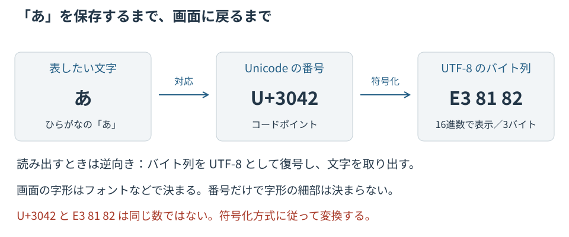
Unicodeは文字の番号などを定める規格、UTF-8はその番号をバイト列にする方式です。「UnicodeかUTF-8か」という二者択一ではありません。保存するときの符号化方式と、読み出すときの方式を合わせることが、文字化けを防ぐ基本です。
もう1つ、「1文字」という言葉に注意しましょう。たとえば「が」は、1つのコードポイントでも、「か」と結合濁点の2つのコードポイントでも表せます。
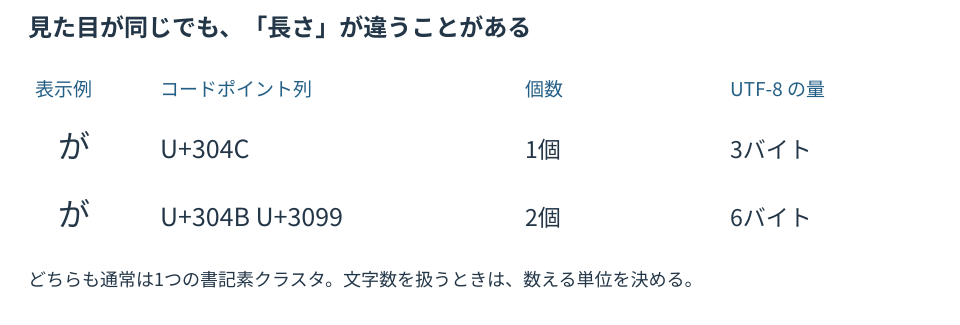
見た目の1文字に近いまとまりを書記素クラスタと呼びます。番号の個数・バイト数・書記素クラスタ数は別々の量です。詳しい仕組みは後の正規化と絵文字の節で説明します。
|
読み進め方：最初に必要なところと、仕組みを掘り下げるところ
|
1.2. 文字コードの変遷
文字コードとはコンピューター内部での文字表現の方法です。コンピューター内部では整数や浮動小数点といった数値を2進法で表現されていたように、文字もコンピューター内部では2進法で表現されています。しかし、文字をコンピューター内部で表現する方法は、文字そのものの複雑さのために数値表現と比べて遥かに煩雑です。
コンピューター上で最初に文字を扱う必要性が生じたのは、おそらくコンピューターとのデータのやりとりのためでしょう。プログラムやデータを人間が解釈しやすく表示するには、特定のコンピューターの機種上でのみ文字と内部表現の対応がとれていれば十分でした。やがて、コンピューターが計算以外の用途、執筆やコンピューターネットワークを介したコミュニケーションに使われるようになると、異なる機種のコンピューターでも同様に文字が読めるように何らかの共通表現を定める必要が生じました。
ASCII
米国で1963年に策定され(英小文字などを加えた1967年の改訂でほぼ現在の形になりました)、現在もUTF-8の一部としてそのまま生き続けている、もっとも基礎的な文字コードがASCII(アスキー、American Standard Code for Information Interchange)です。ASCIIは128個の文字(制御文字を含む)に0〜127の番号を割り当てたもので、番号は7ビットで表せます。
| 下位＼上位 | 0_ | 1_ | 2_ | 3_ | 4_ | 5_ | 6_ | 7_ |
|---|---|---|---|---|---|---|---|---|
_0 |
NULL |
DLE |
SP |
|
|
|
|
|
_1 |
SOH |
DC1 |
|
|
|
|
|
|
_2 |
STX |
DC2 |
|
|
|
|
|
|
_3 |
ETX |
DC3 |
|
|
|
|
|
|
_4 |
EOT |
DC4 |
|
|
|
|
|
|
_5 |
ENQ |
NAK |
|
|
|
|
|
|
_6 |
ACK |
SYN |
|
|
|
|
|
|
_7 |
BEL |
ETB |
|
|
|
|
|
|
_8 |
BS |
CAN |
|
|
|
|
|
|
_9 |
HT |
EM |
|
|
|
|
|
|
_A |
LF |
SUB |
|
|
|
|
|
|
_B |
VT |
ESC |
|
|
|
|
|
|
_C |
FF |
FS |
|
|
|
|
|
|
_D |
CR |
GS |
|
|
|
|
|
|
_E |
SO |
RS |
|
|
|
|
|
|
_F |
SI |
US |
|
|
|
|
|
DEL |
ASCIIは米国で日常的に用いる文字として、数字、アルファベットの大文字・小文字と括弧、ピリオド、コンマなどの役物、ドル記号等を含んでいます。黄色の文字は表示のための文字ではなく、ディスプレイやプリンターの動作等をコントロールするために使われる特別なコードで制御文字といいます。また、SPは空白記号(スペース)を表しています。
この表のすべての文字の位置は16進法で特定できます。上位桁を表す列0〜7と下位桁を表す行0〜Fの2つの座標を用います。
たとえば文字 A は上位の「4_」の列と下位の「_1」の行の交差する位置にありますので対応する値は16進法で \(41_{(16)}\) 、2進法では、\(1000001_{(2)}\) となります。また文字 a は上位の「6_」の列と下位の「_1」の行の交差する位置にありますので対応する値は16進法で \(61_{(16)}\) 、2進法では、\(1100001_{(2)}\) となります。
A と a の2進表現を比べると、違うのは値32(16進法の \(20_{(16)}\))を表すビット1か所だけです(右端を1桁目として右から6桁目。最下位ビットを0番目と数える流儀では5番目)。大文字と小文字は表の列が2つ離れている(「4_」と「6_」、「5_」と「7_」)ので、同じ英字の大文字と小文字の番号の差はいつも32です。そのため、ASCIIの英字 A〜Z / a〜z に限れば、このビットを反転すると大文字・小文字を相互変換できます。英字以外にこの操作をすると、別の文字に変わってしまいます(たとえば [ は { に、数字の 1 は制御文字DC1に変わります)。
16進法の上位桁が0〜7までしか無いことから、上位桁は3ビットであることがわかります。つまり、ASCIIに含まれるすべての文字は、7ビットでその位置を特定できることがわかります。
|
今後は16進法と2進法による数の表現に、C, Java, Python, Ruby, Julia, JavaScript など多くのプログラミング言語でそのまま使える以下の表記を用います。
|
コンピューター内部での数としての表現でも、文字がアルファベット順に並んでいるおかげで、符号値の大小比較が、そのままアルファベット順の比較になります(ただし大文字と小文字が混ざる場合は、すべての大文字がすべての小文字より前に来ることに注意してください)。
改行コード
普段、文章を書いている時に、なにげなく Enter/Return キーを押して改行しているとき、コンピューター内部では、「改行」も制御文字として対応する改行コードが記録されています。
面倒なのは歴史的経緯もあって、使っているOSによって改行の符号化も異なるということです。古い Mac(OS 9以前)を除けば、Unix/Linux と macOS の LF(Line Feed)と、Windows の CR+LF (Carriage Return + Line Feed) の2種類の改行コードが用いられています。
LFはもともとタイプライターで紙を縦に1行分送る動作に相当します。キャリッジはタイプライターの、紙をはさんで横に1文字ずつずらしてゆく部位です。このキャリッジが行末まできたときに、行頭位置まで戻す動作をキャリッジ・リターン(CR)といいます。カーソルで説明すると、行末に来たカーソルを行頭に戻すのがCRで、カーソルを1行下にずらすのがLFです(図 3)。
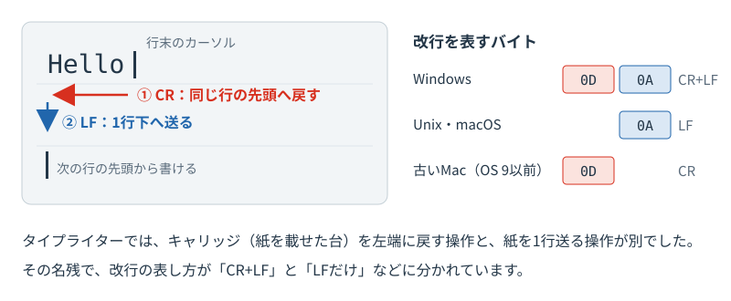
| OS | 改行コード | 制御文字 | 表現 |
|---|---|---|---|
Unix/Linux |
|
LF |
|
Mac(OS X/macOS) |
|
LF |
|
Mac(OS9以前) |
|
CR |
|
Windows |
|
CR+LF |
|
これはOSごとの伝統的な慣習です。実際の改行方式はアプリや設定でも変わります。LFに対応していない古いWindowsアプリなどでは、LFのファイルを開くと改行が認識されない場合があります。
JIS X 0201
世界各国でコンピューターが使われはじめると、米国のASCIIをもとに1967年に国際勧告ISO/R 646が定められました(後に国際規格ISO/IEC 646となります)。当時は、まだ国を跨ってコンピューターの文書がやり取りされることが想定されていなかったため、規格では表の中で国ごとに自由に文字を割り当ててよい位置が定められました。
日本では、この勧告をもとに1969年に初の文字コード規格として JIS C 6220(1987年に JIS X 0201 へ改称)が制定され、また、その際、以下の記号の置き換えをしました。
-
ASCIIの
0x5Cの位置のバックスラッシュ記号\を¥に置き換え -
ASCIIの
0x7Eの位置のチルダ記号~をオーバーライン‾に置き換え
また、ASCIIの7ビットから8ビットの文字コードに拡張し、新たに増えた128文字分の領域を利用して、いわゆる半角カタカナを追加しました。コンピューター上で漢字や平仮名が表現できなかった時代には、このカタカナが唯一の日本語の文字表現でした。
|
この日本独自の文字の置き換えは、現在に至るまで混乱を引き起こしています。 Unicodeには円記号( 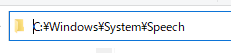 図 4. Explorerのアドレス欄の表示(日本語環境)
これは、Cドライブの下の Windows フォルダの中にある System フォルダのさらに中にある Speech フォルダを表しています。この箇所、もともと以下のように表示されることを意図しています。
念のため以下に同じ文字列を画像でも表示しておきます(上の文字列も、お使いのフォントによっては 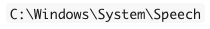 図 5. バックスラッシュの字形で表示した同じパス
表示はアプリ、フォント、言語設定、版によって異なります。見た目だけで円記号かバックスラッシュかを判断せず、コードポイントを調べると区別できます。 |
これは、日本のコンピューター黎明期に互換性のために決めた仕様が、今日まで引き継がれている例です。同じコードポイントに対してフォントによって異なる字形(グリフ)を割り当てる慣習は、Unicode時代になっても解消されていません。プログラミングやパス指定など、バックスラッシュが特別な意味を持つ場面では、見た目が ¥ でも中身は \ であることを意識してください。
以降では、文字コードをより体系的に理解するための枠組みについて説明します。
1.3. 字体、字形、書体
まず、文字コードの理解の基本となる言葉の定義をします。なお、これらの語の使い分けは分野や文献によって異なります。ここではこの教材での定義として読んでください。
- 字体
-
文字を構成している点や線のつながり。構造・骨組みとしての文字の抽象的概念。
- 字形
-
字体を実際に手書き・印刷・画面表示などで表現した図形としての文字
- グリフ
-
コンピューター内でのデータとしての字形表現
- 書体
-
一貫したデザインで作成された字形の集合
【例】明朝体、ゴシック体など - フォント
-
コンピューターで用いるデータとしての書体。
【例】游明朝、MS ゴシック、メイリオなど
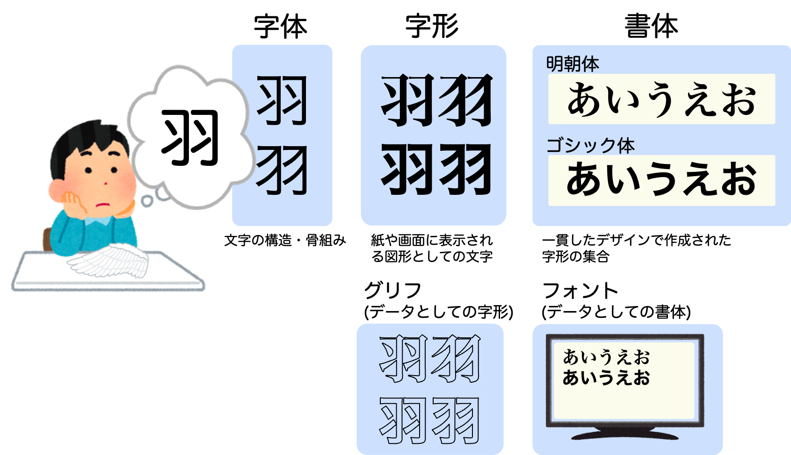
字体と字形、字形と書体の境界は明確にあるわけではありません。
コンピューターでも異なる字体に対して同じ内部表現が割当てられている例がたくさんあります。たとえば、文字「そ」と「き」に対して、図 7ではそれぞれ異なる字体が示してあります(画が続いているか離れているかの違い)。この違いは文字コードでは表現できません。それぞれ左側が「ヒラギノ角ゴシック」、右側が「凸版文久ゴシック」というフォントの違いによって、はじめて区別できるようになります。
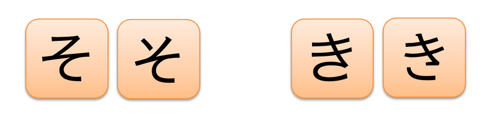
1.4. 符号化文字集合と文字符号化方式
- 符号化文字集合(Coded Character Set: CCS)
-
コンピューターで用いる文字を集めて文字ごとに対応する番号を付けたもの。要はコンピューターで用いる文字を集めた表で、表の座標で表の中の文字を一意に特定できるようにしたものです。この座標もしくは番号を符号位置(コードポイント)といいます。
- 文字符号化方式(Character Encoding Scheme: CES)
-
符号位置をコンピューター内部で表現する方法。つまり、番号をバイト列に変換する規則です。
たとえば「あ」は、UnicodeというCCSでは番号 U+3042 の文字です。これをUTF-8というCESで表すと E3 81 82 の3バイト、UTF-16というCESで表すと 30 42 の2バイトになります(図 1)。同じ番号でも、CESが変わればバイト列が変わります。
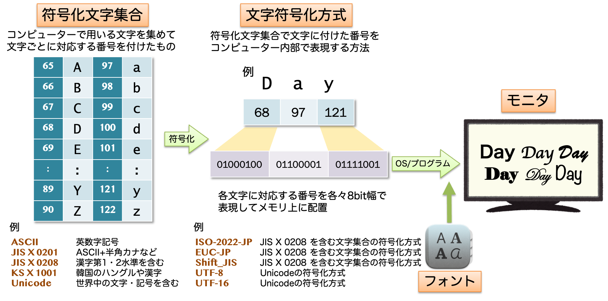
ASCIIが作られた時代には、まだ 符号化文字集合と文字符号化方式のような概念は明確には存在せず、両者の概念は未分化でした。 現在のほとんどのコンピューターはバイトアドレッシング方式といって、1バイト単位でメモリ上のデータ格納場所を指定して読み取っているため、1バイト=8ビットの領域に、それよりビット数の少ない7ビットのASCIIにより表現された文字1文字分のデータを収めることができます。 メモリが高価であった時代には、8文字を7バイト(56ビット)に隙間なくつめて収納する方式もありました。現在の通常のテキストファイルでは、ASCIIの1文字を1バイトに収めます(最上位ビットは0)。
やがて、漢字や世界中の文字を含んだ符号化文字集合が作られるようになると符号位置を表す数字が大きくなり、その表現には2バイト以上必要になりました。2バイト以上のデータが続く場合、文字の読み取り開始位置を間違うと、まったく違う文字と解釈してしまう恐れがあります。そのような曖昧さが発生しないように、コンピューターに符号位置を格納する方法を取り決める必要があります。
ASCII や JIS X 0201 は、互換性を保つように他の符号化文字集合に取り込まれて利用されていますので、以降では、ASCIIやJIS X 0201 を符号化文字集合として話を進めます。
発展：日本の文字を含む符号化文字集合
ASCIIとJIS X 0201の後に日本で標準化された代表的な2つの符号化文字集合 JIS X 0208 と JIS X 0213 について概観します。
JIS X 0208やJIS X 0213 などの日本語文字集合では、文字の位置を 面区点 という座標で表します。この位置を表す座標のことを 面区点番号 と呼びます。
-
面：文字集合の大きな区画。面の概念はJIS X 0213で導入されたもので、JIS X 0208は全体が1つの面に相当し、JIS X 0213には1面と2面がある
-
区：各面内の行に相当し、1〜94までの区画がある
-
点：各区内の列に相当し、1〜94までの位置がある
94という数は、ASCIIの7ビットのうち制御文字と空白、DELを除いた領域(0x21〜0x7E)に収録できる文字数94と一致します。また、この領域を2つ分用いれば 94×94=8,836 となり当時想定されていた日本語の文字数を十分に含んでいたことから、このような構成になりました。
たとえば、文字「あ」は JIS X 0208 では4区2点、JIS X 0213 では1面4区2点に配置されています。後者を 1-04-02 のように表記します。
区点番号は文字の「番号」であり、そのままバイト列になるわけではありません。後で見る ISO-2022-JP、EUC-JP、Shift_JIS は、それぞれ別の規則で区点番号をバイト列に変換します(図 9)。
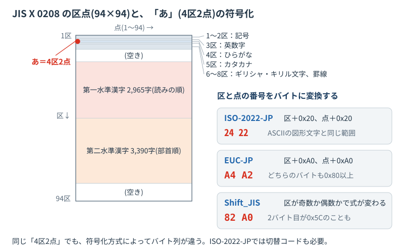
JIS X 0208
第一水準漢字2,965字と第二水準漢字3,390字の計6,355字の漢字、および非漢字524字を含む計6,879文字の符号化文字集合です(字数は1990年の改正以降のもの)。区と点をそれぞれ1バイトで表せるので、2バイト(16ビット)で符号位置を表せます。1978年に JIS C 6226 として制定され、1983年、1990年、1997年と改正を重ねながら(1987年に JIS X 0208 へ改称)、日本語処理の基盤として広く普及しました。
非漢字としては、記号147字(1〜2区)、英数字62字(3区)、ひらがな83字(4区)、カタカナ86字(5区)、ギリシャ文字48字(6区)、キリル文字66字(7区)、罫線素片32字(8区)の計524字を含み、漢字は使用頻度にしたがい、第一水準と第二水準に分類して収録されています。
- 第一水準漢字（2,965字）
-
使用頻度の高い漢字です。16〜47区に、代表的な読みの五十音順に配置されています。一般的な文章に現れる漢字の大部分は第一水準に含まれます。
- 第二水準漢字（3,390字）
-
第一水準より使用頻度の低い漢字で、人名・地名や専門分野で使われるものも含みます。48〜84区に、部首順に配置されています。
日常的に用いるほとんどの文字は、この文字集合で事足ります。前述の JIS X 0201 には、8ビットを用いる場合に7ビットから新たに増える128文字分の領域にカタカナが割り当てられています。JIS X 0201 と JIS X 0208 には両者とも数字、カタカナ、英語アルファベットが定義されているため、JIS X 0201 に含まれる文字をいわゆる半角文字(半角英数、半角カタカナ)、JIS X 0208に含まれる文字を全角文字(全角英数、全角カタカナ)として区別をしています。
符号化文字集合は本来、文字の幅まで決めるものではありません。しかし、1文字を決まった大きさのマス目に表示する当時の文字端末やプリンター、1980年代中盤から1990年代にひろまったワープロ専用機では、ひらがなや漢字を正方形のマス目に並べ(いわゆるベタ組み)、JIS X 0201 の文字をその半分の幅のマス目に表示しました。そこから、JIS X 0201 の文字が半角英数・半角カタカナなどと呼ばれ、JIS X 0208 の文字と区別されるようになりました。
|
現在のワープロソフトやWebブラウザーでは、英数字はフォントごとに決まった文字ごとの幅(プロポーショナル)で並べることが多く、半角文字がかならずしも全角文字の半分の幅になるとは限りません。MS ゴシックのような等幅フォントで表示すると、半角文字は全角文字のちょうど半分の幅になります。下の表で、上下の行の長さを見比べてみてください。
このように半角・全角という呼称は必ずしも実態を反映していませんが、Unicodeでも半角カタカナに “HALFWIDTH KATAKANA”、全角英数字には “FULLWIDTH LATIN/DIGIT” という名称が与えられています。 |
|
いわゆる半角と全角の使い分けについては、Word等で文章を書くときは次の方針に従うのがおすすめです。
|
JIS X 0213
JIS X 0213は2000年に制定され（2004年に改正）、JIS X 0208では対応できなかった文字ニーズに応えるために開発されました。JIS X 0208 の拡張であり、JISで定められた第一水準と第二水準の漢字に加えて、第三水準と第四水準の漢字3,695文字（2004年の改正後の数。2000年の初版では3,685文字）および、非漢字記号を含む符号化文字集合です。
-
第1面: JIS X 0208の文字を包含し、新たに第三水準漢字を追加
-
1区〜94区、各区に1点〜94点
-
JIS X 0208のすべての文字(6,879文字)が含まれる
-
さらに第三水準漢字1,259字と非漢字記号等が追加
-
-
第2面: 第四水準漢字を中心とした追加文字
-
1区〜94区、各区に1点〜94点
-
主に第四水準漢字2,436字を収録
-
人名用漢字、地名漢字、古典籍の文字など
-
理論上は各面で94×94=8,836の符号位置がありますが、JIS X 0213 はその全部を使っているわけではなく、文字の種類ごとに区を割り当てています。いずれにしても、JIS X 0213 の符号位置は以下のように2バイト(16ビット)に収まります。
-
面の表現: 面番号（1または2）は1ビットで表現可能
-
区の表現: 94区なので7ビット（128通り）で十分表現可能
-
点の表現: 94点なので同じく7ビットで表現可能
実際の符号化では、面区点番号を文字符号化方式(ISO-2022-JP, Shift_JIS、EUC-JPなど)によって異なる方法でバイト列に変換します。
-
Shift_JIS: 従来のShift_JIS(WindowsのCP932を含む)が符号化できるのは概ねJIS X 0208の範囲(CP932はこれにNEC・IBM拡張文字を加えたもの)。JIS X 0213に対応した拡張版のShift_JIS-2004では第三・第四水準の漢字も2バイトで符号化できるが、普及は限定的
-
EUC-JP: JIS X 0213に対応した拡張版のEUC-JIS-2004では、1面の文字は2バイト、2面の文字は先頭に
0x8Fを付けた3バイト -
ISO-2022-JP: 素の規格(RFC 1468)はJIS X 0208しか扱えないため第一・第二水準のみ。JIS X 0213対応版(ISO-2022-JP-2004)では1面・2面も扱える
したがって、JIS X 0213自体は符号化文字集合として2バイトに収まる符号位置を使用しますが、実際のファイルやメモリ上での表現方法は選択した文字符号化方式によって決まります。
|
追加した漢字の選び方 JIS X 0213 の追加漢字は、JIS X 0208:1997 の改正で収録字の用例・典拠(出典)を調べ上げたのと同様の方法で、一般に使われているのに JIS X 0208 に入っていない字を調べて選ばれました。なお、1990年に制定された補助漢字(JIS X 0212)は JIS X 0208 にない文字だけを集めた別の文字集合で、あまり普及しませんでした。JIS X 0213 は JIS X 0208 をそのまま含む上位集合として作られています。 2004年の改正では第三水準に10字を追加し、168字の例示字形を、国語審議会の答申「表外漢字字体表」(2000年)に示された字体に合わせて変更しました。第三水準・第四水準を合わせると3,695字で、JIS X 0208 と合わせて約1万字の漢字を扱えるようになりました。 JIS X 0208 が最初に策定された1978年には、日常的な情報伝達に十分な文字集合として設計されました。しかし、コンピューターの普及により、当初の想定を超えて、歴史資料や文学作品の電子化といった用途まで担うことになりました。当時の規格には作家などからの批判もありましたが、技術や社会の事情が現在とは大きく異なっていた点も考慮する必要があります。 |
発展：Unicode以前の日本の文字の符号化方式
かつては、主として以下の3種類の符号化方式がWebページ作りや、プログラミング、文書作成等の様々な場面で、混在して使われていました。いずれも JIS X 0208 を扱うための方式ですが、設計思想や利用環境が異なります。それぞれの特徴を以下の表にまとめます。
表の列見出しにある「自己同期性」とは、バイト列の途中から読み始めても文字境界を判定できる性質のことです。後述するように、Shift_JIS にこの性質がないことが、思わぬセキュリティ問題を引き起こした例もあります。なお、完全な自己同期性をもつのは後述するUTF-8で、EUC-JPはASCIIのバイトと日本語のバイトを混同しないというだけで、2バイト文字同士の境界を途中から判定することはできません。
| 方式 | 主な用途 | 通信ビット幅 | 状態 | 半角カナの扱い | 自己同期性 |
|---|---|---|---|---|---|
ISO-2022-JP |
電子メール |
7ビットでもOK |
あり(モード切替) |
含まない |
なし(モード把握が必要) |
Shift_JIS |
Windows系 |
8ビット |
なし |
1バイトで表現 |
なし(2バイト目がASCIIと重なりうる) |
EUC-JP |
UNIX系 |
8ビット |
なし |
2バイトで表現 |
不完全(ASCIIと日本語のバイトは重ならないが、2バイト文字同士の境界は途中からは判定できない) |
以下では、それぞれの方式について、具体的な符号化例とともに見ていきます。各例は、その方式の設計上の特徴がよく現れるように選んでありますので、表を見るときには 「見どころ」 に注意してください。
ISO-2022-JP
いわゆるJISコードとよばれている符号化です。文字集合としてASCIIとJIS X 0208を含みますが、JIS X 0201の半角カタカナは含まれません。ASCIIに属する文字は1バイト、JIS X 0208の漢字・ひらがな・全角カタカナなどは2バイトを用いて表現する可変長符号化方式です。
各バイトの最上位ビット(8ビット目)は常に0になるように設計されているため、7ビットしか通せない通信環境でも使用できます。そのため、インターネット初期の電子メールシステムで広く採用されました。
複数の符号化文字集合を3バイトの制御コード(エスケープシーケンス)により切り替えて扱います。たとえば 24 22 という2バイトは、ASCIIのモードなら $" の2文字、JIS X 0208 のモードなら「あ」です。そのため、現在どの文字集合で書かれているかは局所的には判断できず、データを先頭から順に読み進めて切り替えを確認する必要があります。
以下の表は ISO-2022-JP で「ABあい\n」を符号化した際のバイト列です(最後の \n は Line Feed による改行を表しています)。バイト列の値はすべて16進表記です。8ビットのうち最上位ビットが一切使われていません(つまり、各バイトの16進表記の上位桁が8以上になることがありません)。ASCII互換ですが、日本語の JIS X 0208 の文字を使うときには切り替えのための3バイトの制御コードが挿入されていることがわかります。日本語から、再びASCII文字を用いるときにはASCIIモードに復帰するための3バイトの制御コードが挿入されます。
| バイト列 | 41 |
42 |
1B |
24 |
42 |
24 |
22 |
24 |
24 |
1B |
28 |
42 |
0A |
|---|---|---|---|---|---|---|---|---|---|---|---|---|---|
文字 |
|
|
|
|
|
|
|
|
|
|
|
||
備考 |
ASCII |
JIS X 0208へ |
JIS X 0208 |
ASCIIへ復帰 |
|
||||||||
|
この例のポイント
|
JIS X 0208 モードでは、区と点の番号にそれぞれ 0x20 を加えた値を1バイトずつ並べて符号化します。どちらのバイトも 0x21〜0x7E の範囲に収まるので、ASCIIの図形文字と同じ範囲の値になります。
以下は、JIS X 0208 モードでの区点番号からの変換の例です。
-
「あ」の(区番号, 点番号) = (4, 2)
-
第1バイト = 区番号
4+0x20=0x24 -
第2バイト = 点番号
2+0x20=0x22 -
結果:
0x240x22
-
Shift_JIS
1980年代前半にパソコン向けに考案され、MS-DOS や Windows で広く使われてきた符号化で、符号化文字集合 JIS X 0201 と JIS X 0208 を、それぞれ1バイトと2バイトで符号化する可変長符号化方式です。JIS X 0201 の半角カナの領域(0xA1〜0xDF)を避けて、残りの 0x81〜0x9F と 0xE0〜0xFC を2バイト文字の1バイト目に使います(図 10)。Windowsでは、マイクロソフトが独自の拡張文字を加えたCP932(Windows-31J)が使われています。日本語のほとんどの文字は2バイトで表現されます。
バイト列 |
|
|
|
|
|
|
|
|
|---|---|---|---|---|---|---|---|---|
文字 |
|
|
|
|
|
|
|
|
|
この例のポイント
|
Shift_JISでは区点番号をやや複雑な方法で符号化します。一般の場合の規則は省略し、ここでは例だけを示します。
例:「表」(41区29点)の場合
-
第1バイト =
0x81+ (41 - 1) ÷ 2 =0x81+ 20 =0x95 -
第2バイト =
0x3F+ 29 =0x5C -
Shift_JIS での「表」 =
0x950x5C
（この式は奇数区のうち区番号1〜61、点番号1〜63の場合に使えます。区番号63以上、偶数区、点番号64以上では別のオフセットが必要です。）
EUC-JP
EUC-JP(Extended Unix Code packed format for JaPanese)は、UNIXとよばれるOS上で日本語を扱う際に用いられてきた文字コードです。ASCIIの文字は1文字1バイト、それ以外のほとんどの日本語の仮名・漢字などは2バイトで符号化される可変長符号化方式です。2バイトの符号化では1バイト目も2バイト目も最上位ビット(8ビット目)が1になっており、ASCIIの符号と重ならないように設計されています。いわゆる半角カタカナも2バイトで符号化されています。また、JIS X 0212補助漢字に該当する文字は3バイトで符号化されますが、同様に2バイト目と3バイト目の最上位ビットは1になるように設計されています。
バイト列 |
|
|
|
|
|
|
|
|
|
|
|---|---|---|---|---|---|---|---|---|---|---|
文字 |
|
|
|
|
|
|
|
|||
|
この例のポイント
|
EUC-JPは単純な方法で面区点をバイト列に変換します。
例：「表」(41区29点)の場合
-
第1バイト =
0xA0+ 41 =0xC9 -
第2バイト =
0xA0+ 29 =0xBD -
EUC-JPでの「表」 =
0xC90xBD
いわゆる半角カタカナの場合、第1バイトを 0x8E(Single Shift 2)とし、第2バイトには JIS X 0201 の半角カナコード(7ビット)に 0x80 を加えた値を置きます。例: 「ｱ」は JIS X 0201 の8ビット符号では 0xB1 (7ビットのカナ集合では 0x31)なので、EUC-JP では 0x8E 0xB1 (= 0x31 + 0x80)となります。
3方式の比較まとめ
ここまで見てきた3方式を比較します。
| 文字コード | バイト構造 | 特徴 |
|---|---|---|
ISO-2022-JP |
ASCII: |
全バイトの最上位ビットが0(7ビット安全)。モード切替が必要 |
Shift_JIS |
ASCII / 半角カナ: |
2バイト目はASCIIと重なる範囲があり、誤検出の可能性がある |
EUC-JP |
ASCII: |
日本語のバイトはすべて最上位ビットが1。ASCIIと混同しない |
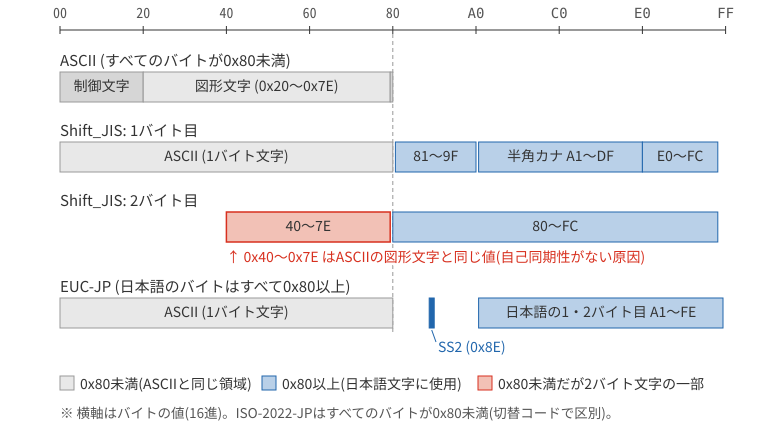
直感的には、同じ「A表」という文字列を3方式で符号化すると、たとえば以下のように違ってきます (\n は省略)。
| 方式 | バイト列 | バイト数 |
|---|---|---|
ISO-2022-JP |
|
9バイト |
Shift_JIS |
|
3バイト |
EUC-JP |
|
3バイト |
ISO-2022-JPは漢字を1文字使うだけで切替コードのオーバーヘッドが発生するため、短い日本語ではバイト数が膨らみます。一方、長い日本語であれば1度の切替で済むので、相対的なオーバーヘッドは小さくなります。Shift_JIS と EUC-JP は同じバイト数ですが、Shift_JIS は2バイト目にASCIIと重なる 0x5C などの値が現れるのに対し、EUC-JP は2バイト目も最上位ビットが1の値しか出ないため、ASCIIと混同されないという違いがあります。
1.5. Unicode の基礎
世界中の文字を含む文字集合 Unicode
インターネットで世界中のWebページにアクセスできる時代になると、国ごとに異なる文字コードでWebページが記述されているため、閲覧時にはどの文字コードかがわからず、いわゆる文字化けが頻発しました(英語のWikipediaでもmojibakeという項目があります)。また、世界中で共通のOS(Windows, macOS, Linuxなど)や、ソフトウェア(Microsoft Officeなど)が使われるようになると、ソフトウェアの開発も国ごとに開発をし直したりするコストが問題になりました。
そこで、世界中の文字を含む大きな符号化文字集合を作成することになりました。そうしてできたのが、Unicodeです。「Uni=単一の」「code=符号」の名前のとおり、世界中の文字を共通に扱うことを目指す規格です。すべての文字が収録済みという意味ではなく、1991年に Unicode 1.0 が策定されて以来、文字を追加しながら版をかさねています(2026年9月の Unicode 18.0 で約17万3千字)。
Unicode上の文字の位置(番号)をコードポイントと呼びます。たとえば「学」という漢字のコードポイントは U+5B66 のような形式で表します。 5B66 の部分は16進法による数表現です。コードポイントは、Unicodeという符号化文字集合の中で文字の位置を特定するための識別子であり、コンピューター内部での表現(バイト列)ではないことに注意してください。
Unicode では、中国語、日本語、朝鮮語、ベトナム語で使われている漢字を統合して、共通して使える漢字には同じコードポイントを割り当てています。これをCJK(CJKV)統合漢字とよびます。実際には字形や由来が異なる漢字が統合されたこともあり批判もありました。しかし、様々な言語で共通に用いられているラテン文字は統合して符号化されていることを考えると、言語を跨って共通に使われている文字を統合しようという考え自体は自然なものです。
コードポイントを複数組合せて1文字を表現する仕組みがあることから、1文字が必ずしも1つのコードポイントで表現されるわけではありません。
複数の符号化文字集合があった場合、コードポイント(もしくはコードポイントに相当する付番)は独立に与えられていますので、符号化文字集合が異なれば、同じコードポイントでも異なる文字に対応することがあります。しかし、UnicodeはASCIIを包含する形で設計されているため、Unicodeの最初の128文字はASCIIと一致します。
Unicodeコードポイントマップ
Unicodeのコードポイント空間は、U+0000 から65,536(\(2^{16}\))個ずつ区切った17の「面(plane)」に分かれています。コードポイントの下位4桁(16進法)が面の中の位置、それより上の桁が面の番号です。以下の表はその概要を示しています。
| 面番号 | 名称 | 主な収録文字 |
|---|---|---|
0 (U+0000-U+FFFF) |
基本多言語面 (BMP) |
ASCII、ラテン文字、漢字（CJK統合漢字）、ひらがな、カタカナなど |
1 (U+10000-U+1FFFF) |
追加多言語面 (SMP) |
歴史的文字、音楽記号、絵文字など |
2 (U+20000-U+2FFFF) |
表意文字補助面 (SIP) |
CJK統合漢字拡張B〜F・Iなど |
3 (U+30000-U+3FFFF) |
第三漢字面 (TIP) |
CJK統合漢字拡張G・H・J、篆書(Unicode 18.0で追加)など |
4-13 |
未割当て |
（将来の拡張用） |
14 (U+E0000-U+EFFFF) |
特殊目的補助面 |
言語タグ、異体字セレクタなど |
15-16 |
私用面 |
利用者どうしの取り決めで自由に使う領域(私用領域) |
|
文字は情報を伝えるための重要なインフラです。 文字コードは文学や歴史学の分野では無縁だと思う向きもあるかもしれません。しかし現在、ほとんどの文学作品はコンピューター上で執筆されています。また、電子化された文書は文化を継承する重要な資料となっています。Unicodeには、現在は日常的に使われていないヒエログリフやルーン文字、楔形文字なども収録されています(ヒエログリフの例:「𓀀𓄿𓅱𓆑𓅓」。フォントが対応していなければ見えません)。 膨大な文字の標準化や字形のフォントデザインには気の遠くなりそうな地道な作業があります。単なる文字数の問題ではなく、錯視等の人の視覚特性を考慮したデザインをする必要があります。そのため、たとえば同じ偏の漢字でも、つくりが異なると偏のデザインも、つくりとのバランスによって修正されます。日本語のフォントは1書体で2万を超える字形を収めることも珍しくなく、制作には数年かかることもあります。Unicodeの統合漢字(CJK統合漢字)は2025年の Unicode 17.0 で10万字を超えました。 インフラとしてのフォントデザインに興味を持った方には「一〇〇年目の書体づくり―『秀英体 平成の大改刻』の記録」(大日本印刷, 2013)をおすすめします。2005年に始まり、延べ12万字を開発した書体改刻の記録です。普段、文字を意識せずに文章を読むことができる背後には、緻密なデザインと膨大な作業があることがよくわかります。 我々は、文字インフラを大変な労力をかけて整備してきた方々、そして、現在もインフラ整備に取り組んでいる方々の恩恵を受けています。 |
Unicode の符号化方式
まずは次の違いを押さえてください。表の単位は1つのUnicodeスカラー値です。見た目の1文字にスカラー値が複数必要な場合は、それぞれを符号化します。
| 方式 | 1スカラー値の長さ | 押さえる特徴 |
|---|---|---|
UTF-16 |
2または4バイト |
BMP外は16ビットの符号単位2つで表す |
UTF-8 |
1〜4バイト |
ASCIIの範囲は同じ1バイト。あ・がなどは3バイト |
UTF-32 |
4バイト |
固定長。ただし見た目の1文字が4バイトとは限らない |
以下は、この違いを生んだ背景と具体的な符号化の仕組みです。ビットの計算は折りたたみ欄に分けています。
出発点：文字の番号をそのまま16ビットで表す
初期のUnicodeは、文字に付けた番号を16ビットでそのまま表す設計でした。たとえば「あ」の番号 U+3042 は、16ビットの値 0x3042 で表せます。番号と内部表現を直接対応させる、素直な考え方です。この16ビット固定の方式は UCS-2 と呼ばれます（2バイトを並べる順序は後で説明します）。
しかし、文字を割り当てる領域を16ビットの範囲より広げると、すべての番号を1つの16ビット値に収めることはできません。そこで、従来の表現を引き継ぎながら、一部の番号を16ビット値2つの組で表すように拡張したものが UTF-16 です。この「単純な出発点 → 拡張が必要になった理由」の順で見ていきましょう。
|
初期の16ビット固定方式とUTF-16の区別
Unicode 1.x の16ビット固定の方式と、サロゲートペアを持つUTF-16は区別します。UTF-16とUTF-8は、どちらもUnicode 2.0（1996年）で規格の本文に入りました。UTF-8の元になった方式(FSS-UTF)は、1993年のUnicode 1.1に参考として掲載されていました。以下はUTF-16の方がUTF-8より先に成立したという年表ではなく、16ビットの設計から仕組みを理解するための説明順序です。 参照：Unicode FAQ、Unicode Character Encoding Model。 |
現在のUnicodeでは、コードポイントの範囲は16ビットに収まらず、最大値を表すには21ビット必要です。ただし、各文字を21ビット固定で保存するわけではありません。番号の範囲と、保存する際の符号化方式を分けて考えます。
Unicodeのコードポイントの範囲は U+0000〜U+10FFFF の1,114,112個です。このうちサロゲート領域 U+D800〜U+DFFF を除いた1,112,064個をUnicodeスカラー値と呼びます。UTF-8・UTF-16・UTF-32はいずれも同じスカラー値の範囲を符号化します。
21ビットの枠があっても、そのすべてを文字に使えるわけではありません。サロゲート以外にも、非文字として予約された位置や私用領域、未割当ての位置があります。符号化できる値の数と、収録済みの文字数は区別しましょう。参照：Unicode 17.0 第3章。
UTF-16
UTF-16は、16ビットを1つの符号単位（code unit）とし、1スカラー値を1つまたは2つの符号単位で表す方式です。
-
BMP内のスカラー値：番号をそのまま1つの16ビット値で表します。「あ」なら
0x3042で、2バイトです。 -
BMP外のスカラー値（
U+10000以上）：2つの16ビット値に変換して表すので、4バイトです。この組をサロゲートペアと呼びます。
サロゲートペアの前半には 0xD800〜0xDBFF、後半には 0xDC00〜0xDFFF の値を使います。これらの範囲は通常の文字の番号には使わず、ペアを識別するために予約されています。計算方法を覚える前に、従来の16ビット表現を保ちつつ、2つ組で表せる範囲を広げたことを押さえてください。
発展：サロゲートペアの計算（初読では省略可）
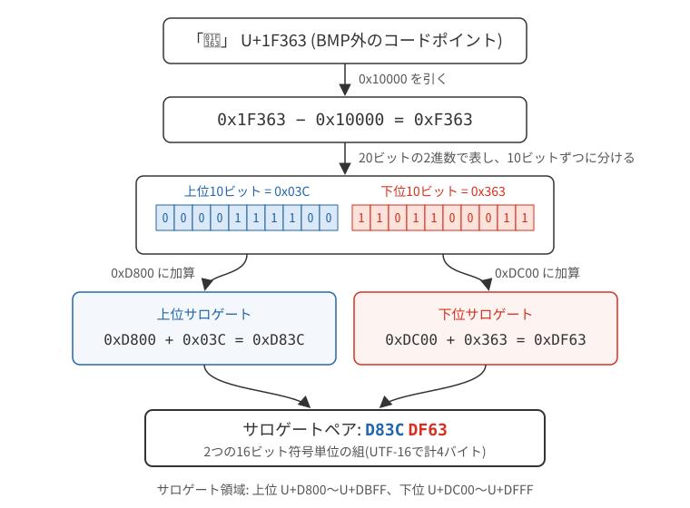
Windows(1993年のWindows NT以降)は、文字列の内部表現に16ビット単位の方式を採用しました。当初は16ビット固定の方式で、現在はUTF-16(リトルエンディアン。この意味は後で説明します)です。JavaやJavaScriptの文字列も16ビット単位です。1990年代初頭には「16ビットあれば世界の文字が収まる」と考えられていたためで、Unicodeが16ビットを超えた後も、互換性を保つためにこの設計が続いています。
UTF-8
一方、ASCIIの英数字まで2バイトにすると、従来のASCIIのバイト列とは一致しません。そこで次に、ASCIIとの互換性を保ちながらUnicodeを表す方式を見ます。
UTF-8は、ASCIIの範囲をそのまま1バイトで表せるUnicodeの符号化方式です。1つのスカラー値を1〜4バイトで表します。「é」などは2バイト、「あ」「学」などは3バイト、BMP外の漢字や多くの絵文字は4バイトです。ただし、結合文字や絵文字の組み合わせを含む「見た目の1文字」全体では、4バイトを超える場合もあります。
UTF-8のバイト列には、次のような扱いやすい性質があります。
-
ASCIIの文字は
0x00〜0x7Fの1バイトで、2バイト以上の文字のバイトはすべて0x80以上です。Shift_JISのように、漢字の一部を\と取り違えることは起きません。 -
各バイトの先頭のビットを見れば、そのバイトが「1バイトの文字」「複数バイトの文字の先頭」「続きのバイト(
10で始まる)」のどれかがわかります。途中から読み始めても、次の文字の先頭を見つけられます(自己同期性)。 -
規格がバイトの並びそのものを決めていて、先頭から1バイトずつ読めばよいので、UTF-16のようなバイト順(エンディアン)の問題が生じません(バイトの並び順の節で説明します)。
発展：UTF-8のビット配置と「あ」の符号化（初読では省略可）
| コードポイントの ビット数 |
コードポイントの範囲 | 符号化 (右詰め) |
|---|---|---|
7bit |
|
0xxx xxxx |
11bit |
|
110x xxxx 10xx xxxx |
16bit |
|
1110 xxxx 10xx xxxx 10xx xxxx |
21bit |
|
1111 0xxx 10xx xxxx 10xx xxxx 10xx xxxx |
（4ビットごとの空白は読みやすさのためです。UTF-8では、サロゲート U+D800〜U+DFFF、U+10FFFF を超える値、必要以上に長い符号化は不正です。）
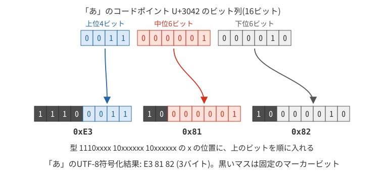
UTF-32
Unicodeのすべてのスカラー値（最大21ビット）を32ビット(4バイト)の固定長で符号化する方式です。ASCIIに含まれる文字だけで書かれた文書でも1文字4バイトになり、ASCIIの4倍の領域を消費するため、ファイルの保存にはあまり用いられません。一方、n番目のスカラー値の位置をすぐに計算できるので、プログラムの内部で文字列を処理するときに用いられることがあります。（後で説明する結合文字列や異体字セレクタを考慮すると、見た目の1文字がかならず4バイトになるわけではありません。）
UTF-8とUTF-16はスカラー値ごとの長さが可変です。UTF-32では、BOMなどを除いた正しいデータのバイト数を4で割ればスカラー値の個数がわかります。ただし、どの方式でも、バイト数だけから見た目の文字数を求めることはできません。
|
Windowsのメモ帳とExcelでの符号化方式
Windows の「メモ帳」では、既定の符号化方式が、長らく使われてきた Shift_JIS から UTF-8 に変わりました(Windows 10 の2019年の更新以降)。メモ帳では Shift_JIS に相当する符号化方式(日本語版Windowsの既定のコードページ、CP932)は ANSI と表示されています。また、やや古いメモ帳では、UTF-16LE は Unicode と表示されています。 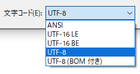 図 13. メモ帳で選べる符号化方式
Excel で CSV ファイルを開くときは注意が必要です。Excel は、先頭に3バイトの目印 |
UTF-16 と UTF-32 におけるバイトの並び順
UTF-16では、文字を16ビット(2バイト)の符号単位で扱います。この2バイトをファイルやメモリにどちらの順序で並べるかについて、2つの方式があります(図 14)。
たとえば「あ」(U+3042)は、同じUTF-16でも、30 42 の順にバイトを並べる場合と、42 30 の順に並べる場合があります。30 42 のように上位のバイトを先に(人が数を読むときと同じ順に)並べる方式をビッグエンディアン(Big-Endian)、42 30 のように下位のバイトを先に並べる方式をリトルエンディアン(Little-Endian)といいます。
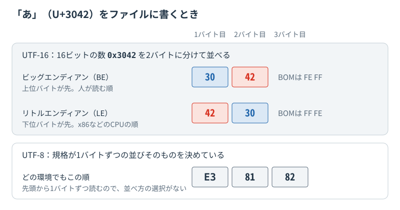
これらの名称は『ガリバー旅行記』のエピソードに由来しています。物語では、ゆで卵を「大きい端から割るべきか(ビッグエンディアン)」「小さい端から割るべきか(リトルエンディアン)」で、小人の国(リリパット)の住人が2つの派閥に分かれて争います。
では、なぜほとんどの文字が2バイトの Shift_JIS や EUC-JP ではエンディアンの区別が不要なのに、UTF-16やUTF-32のときだけエンディアンが問題になるのでしょうか。
違いは、規格が何を決めているかにあります。UTF-16は「16ビットの数」の列を、UTF-32は「32ビットの数」の列を定めています。数をファイルに書くには2バイト(または4バイト)に分けて並べる必要があり、その並べ方に2通りの流儀があります。コンピューターのメモリは1バイトごとに番地が付いていて(バイトアドレッシング)、複数バイトの数を上位のバイトから置くCPUと、下位のバイトから置くCPUがあるためです。
一方、Shift_JIS、EUC-JP、UTF-8は、はじめから「1バイト目はこの値、2バイト目はこの値」とバイトの並びそのものを定めています。読む側は先頭から1バイトずつ読み、最初のバイトを見て「1バイトの文字か、複数バイトの文字の先頭か」を判断し、必要なら続くバイトを読みます。16ビットや32ビットの数としてまとめて読むわけではないので並べ方を選ぶ余地がなく、エンディアンの問題は生じません。UTF-8の「あ」E3 81 82 は、どのCPUのコンピューターでもこの順で保存されます。
同じコンピューターの中でデータを扱うだけなら、エンディアンは通常問題になりません。しかし、文字データはコンピューターをまたがってやり取りされるため、UTF-16やUTF-32では、どちらの並べ方かを取り決める必要があります。これはデータ形式の取り決めであり、どちらのCPUでも、指定されたバイト順のファイルを読み書きできます。
バイト順の伝え方：BOMとUTF-16BE/LE
バイト順を伝える方法は2つあります。
データの先頭にBOMを置く
UTF-16では、データの先頭にコードポイント U+FEFF (ZERO WIDTH NO-BREAK SPACE)を1つ置くことがあります。受信側は最初の2バイトを見て、どちらの順で並んでいるかを判断し、以降のデータをその順で読みます。この目印を BOM(Byte Order Mark)と呼びます。U+FFFE は文字として使わない値(非文字)なので、逆順の FF FE と取り違えることはありません。
-
ビッグエンディアンで符号化すると
FE FF -
リトルエンディアンで符号化すると
FF FE
UTF-32でも、同様に先頭に U+FEFF を1つ置き、00 00 FE FF ならビッグエンディアン、FF FE 00 00 ならリトルエンディアンと判定します。
名前でバイト順を指定する
UTF-16BE、UTF-16LE という名前(ラベル)で、プロトコルや設定、APIの仕様などでバイト順を決めておく方法です。この場合はBOMを付けません。Unicodeの規定では、UTF-16BE/LEと指定されたデータの先頭に U+FEFF があっても、BOMではなく(幅のない空白の)文字として扱います。WindowsのAPIでは UTF-16LE が標準です。
| 名前 | バイト順 | BOM |
|---|---|---|
UTF-16 |
BOMで示す。BOMがなければビッグエンディアンとみなす(RFC 2781も同じ) |
付けることが多い |
UTF-16BE |
ビッグエンディアン |
付けない |
UTF-16LE |
リトルエンディアン |
付けない |
ソフトウェアの表示名は、この規定と一致しないことがあります。たとえばWindowsのメモ帳で「UTF-16 LE」を選んで保存すると、先頭にBOM FF FE が付きます。出典：Unicode FAQ: UTF-8, UTF-16, UTF-32 & BOM。
UTF-8のBOM(シグネチャ)
UTF-8にはエンディアンの問題がないので、本来BOMは不要です。しかし、主にWindowsのアプリケーションで、ファイルがUTF-8であることを示す目印として、U+FEFF をUTF-8で符号化した3バイト EF BB BF を先頭に付けることがあります。これをUTF-8シグネチャ、または「BOM付きUTF-8」と呼びます。Unicodeは、UTF-8にBOMを付けることを必須とも推奨ともしていません。Unix/Linuxの環境では付けないのが普通で、先頭に特定のASCII文字を期待する形式(たとえばUnixのスクリプトの先頭の #!)では、BOMが問題を起こします。
発展：文字以外のデータのバイト順
エンディアンは文字に限らず、複数バイトの数を並べるときにいつも問題になります。
- ビッグエンディアン
-
上位のバイトから順に並べる方式です。16進法で
1234という16ビットの数は、1234の順に並びます。TCPやIPのヘッダーに含まれる複数バイトの整数(ポート番号など)はビッグエンディアンで送ります(ネットワークバイトオーダー)。たとえばポート番号8080(16進法で1F90)は1F90の順に送信されます。PNG画像やJPEG画像、音声ファイルのAIFFなどの形式も、数値にビッグエンディアンを使います。 - リトルエンディアン
-
下位のバイトから順に並べる方式です。16進法の
1234は3412の順に並びます。パソコンで広く使われるx86のCPUや、スマートフォンなどで使われるARMのCPU(通常の設定)はこの方式です。
ただし、インターネットを流れるすべてのデータがビッグエンディアンというわけではなく、データの形式ごとの規定に従います。
julia> collect(reinterpret(UInt8, UInt16[0x1234]))
2-element Vector{UInt8}:
0x34
0x12reinterpret は、同じデータを別の型の並びとして読みます。16ビットの数 0x1234 をバイトの並びとして読むと、メモリには 34 12 の順に置かれていることがわかります。ビッグエンディアンの環境では順番が逆になります。
符号化のトレンド
図 15は、世界中のWebページで使われている文字コードの割合の経年変化です。 2008年ごろに、それまで最も使われていたASCIIやラテン文字用の文字コードを、Unicode(主としてUTF-8)が追い抜いたことがわかります。
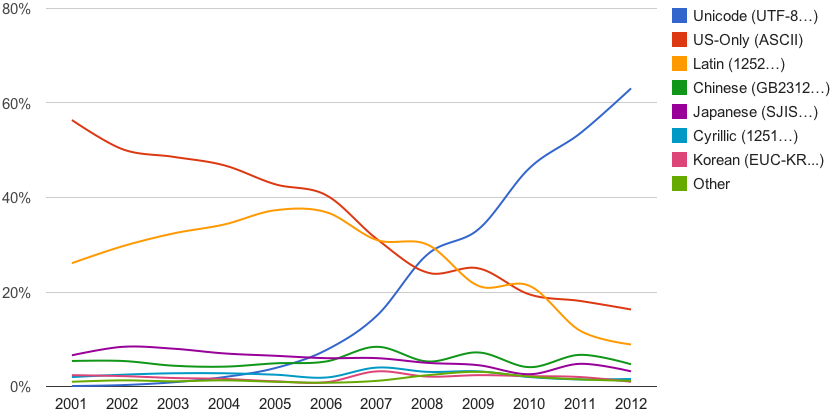
その後もUTF-8は急速に普及しました。W3Techsの調査では、2026年9月時点で、文字コードが判明したWebサイトの99.1%がUTF-8を使っています。日本語用の Shift_JIS は0.1%未満、EUC-JP は0.1%です(W3Techs: Usage statistics of character encodings for websites、2026年9月26日確認)。
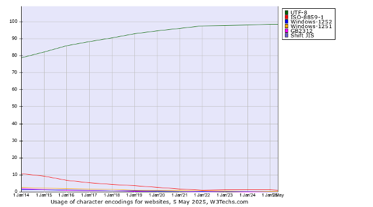
参考までに、Webサイトの内容の言語の割合を表 12に示します。英語が約半分を占め、日本語は4位です。
| 言語 | 割合 |
|---|---|
英語 |
49.5% |
スペイン語 |
6.0% |
ドイツ語 |
5.9% |
日本語 |
4.9% |
フランス語 |
4.5% |
ここまでの解説を図 17にまとめました。図の下の異体字セレクタについては、後の節で説明します。
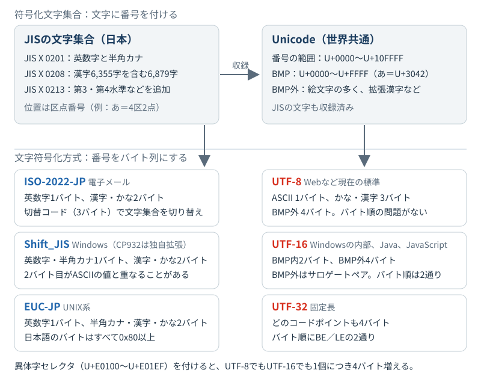
文字化けの仕組み
Webページを閲覧する際に、意味不明な文字列の羅列が表示される、いわゆる「文字化け」がおこることがあります。保存したときの符号化方式と、読むときに想定した符号化方式が食い違うと起こります。たとえば、Webブラウザーが、Webページがどの文字コードで書かれているかを推定する際に間違えると起こります。現在では、特に理由がない限りは UTF-8 でWebページを記述し、そのことをページの中で宣言するのがおすすめです。
文字化けの正体は、バイト列の「区切り方」と「対応表」の取り違えです。例として、「こんにちは」をUTF-8で符号化したバイト列を、Shift_JISだと思い込んで復号するとどうなるかを見てみましょう(図 18)。
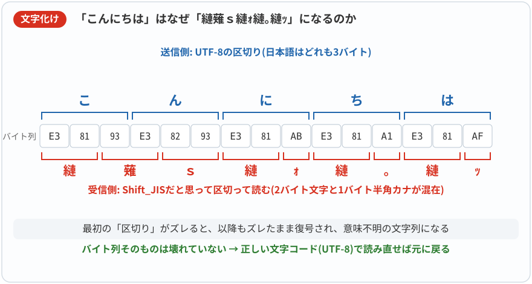
UTF-8では日本語1文字が3バイトであるのに対し、Shift_JISではひらがな・漢字が2バイト、半角カナが1バイトです。区切る単位が異なるため、最初の1文字からすでにズレが生じ、以降もズレたまま無関係な文字に化けてゆきます。日本語のWebやメールでしばしば見かける「縺」や「繝」だらけの文字化けは、このUTF-8→Shift_JIS誤読の典型例です。
元のバイト列が残っていれば、正しい符号化方式で読み直すことで復元できます。ただし、どんなバイト列でも別の方式で正しく読めるとは限りません。たとえば「データ」のUTF-8のバイト列をShift_JISとして読むと、Shift_JISとして正しくない組合せが現れ、その部分は置換文字「�」(U+FFFD)になります(PythonのCP932で試すと「繝�繝ｼ繧ｿ」。どこが「�」になるかは復号するソフトによって異なります)。逆向きの取り違え(Shift_JISをUTF-8として読む)でも、UTF-8として不正なバイト列が現れるため「�」が並びがちです。「�」を含む状態で上書き保存すると元のバイトは失われ、符号化方式を変えるだけでは復元できません。
機種依存文字
「①」や「㈱」は、かつて「機種依存文字」と呼ばれていました。JIS X 0208 には含まれず、メーカーが独自に追加した文字だったため、機種が違うと別の文字に化けたり表示できなかったりしたからです。現在、これらの文字のほとんどはUnicodeに収められているため、Unicodeが扱えるシステムどうしでは問題なくやり取りできます。
かつて、電子メールは1バイトあたり7ビットまでの領域を利用して送信する決まりでした。今ではほとんどのメールソフト(スマートフォンを含む)が、送信可能な形式に変換したUnicode(UTF-8)で送信できるので、かつての機種依存文字も意識せずに送れます。ただし、ISO-2022-JP で送信するメールシステムも残っているため、機種依存文字が文字化けを起こす可能性はまだあります。また、受け取り側に対応するフォントがない場合も、正しく表示されません。
まとめると、文字化けの主な原因は次の3つです。
-
表示するアプリケーション(Webブラウザーなど)が文字符号化方式を誤って解釈する
-
文字に対応するフォントがない
-
表示するソフトウェアがその文字や仕組み(結合文字、絵文字の組み合わせなど)に対応していない
文字コード発展概略
-
1963年 - ASCII策定（7ビット、128文字。1967年の改訂でほぼ現在の形になる）
-
1969年 - JIS C 6220(のちのJIS X 0201)策定（日本初の文字コード規格）
-
1978年 - JIS C 6226(のちのJIS X 0208)第一版（第一・第二水準漢字を含む）
-
1980年代〜1990年代 - パソコンの Shift_JIS、UNIX の EUC-JP、電子メールの ISO-2022-JP が用途ごとに併存
-
1991年 - Unicode 1.0公開
-
1996年 - Unicode 2.0（UTF-16とサロゲートペアを導入し、16ビットを超える範囲へ）
-
2000年 - JIS X 0213 制定（第三・第四水準）
-
2008年ごろ - Unicodeが Web で最も使われる文字コードに(ASCII・ラテン文字用の文字コードを追い抜く)
-
2010年 - Unicode 6.0 で絵文字を収録。文字情報基盤(MJ)整備事業開始
-
2012年 - Webページの60%以上がUnicodeを採用
-
2025年 - Unicode 17.0（収録文字数 約16万）
-
2026年 - Unicode 18.0（収録文字数 約17万3千）。Webサイトの約99%がUTF-8を採用
1.6. Unicode の応用 (1): 包摂と異体字
ここまでは Unicode のコードポイントを「文字に1対1で割り当てられた番号」として扱ってきました。しかし、漢字の世界には「これは同じ字とみなすべきか、別の字か」という、簡単には決められない問題が常につきまといます。たとえば「辻」「葛」「𠮷」など、字体の細かな違いをどう扱うかは古くから議論があります。本節では、Unicode がこの問題をどう取り扱っているかを見ていきます。
異体字シーケンス(Ideographic Variation Sequence: IVS)
同じ文字と見なせる複数の異なる字体をひとつの文字としてまとめて扱うことを包摂といいます。Unicodeで包摂された字体には同じコードポイントが与えられます。
ひとつの文字にまとめられるといっても、用途によっては異なる字体の文字を表示したいことがあります。このように包摂される字体の中の特定の形を示すために使われるのが異体字セレクタ(Variation Selector)です。
たとえば、「工󠄁」(図 19の1行目の右端)は「工」の異体字であると考えられます。文字としては「工」が「工󠄁」を包摂しているとして、「工」を基底文字として唯一のコードポイント U+5DE5 が割り当てられています。しかし、実用上は両方の字体を使いたいことがあるため、Unicodeでは異体字シーケンス(Ideographic Variation Sequence: IVS)という仕組みが導入されています。これは、同じ文字と考えられる異なる字体の文字(異体字)に対して枝番号を与える仕組みです。異体字セレクタという枝番号(U+E0100〜U+E01EF の240個)を基底文字の後ろにつけることで、同じ文字に対して最大240通りの字体を区別できます。基底文字と異体字セレクタを併せたコードポイント列を異体字シーケンスと呼びます。
基底文字のコードポイント＋異体字セレクタ( U+E0100 ～ U+E01EF )
たとえば、 以下のように異体字セレクタにあたるコードポイントを、「工」のコードポイントの後ろに並べるだけで、「工」の異体字を表すことができます。
| Unicode | 対応する字体 |
|---|---|
|
工 |
|
工󠄀 |
|
工󠄁 |
図 19は、いくつかの漢字に異体字セレクタ U+E0100(VS17)と U+E0101(VS18)を付けたときの字形です。読者の環境のフォントに左右されないよう、Noto Serif CJK JP の字形を図にしました。
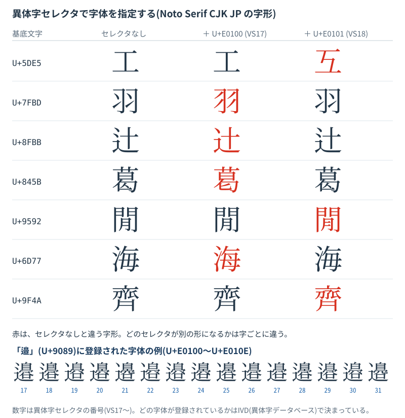
|
上の「工」の表の表示は、お使いの環境のフォントによって異なります。見え方に違いがない場合は、使っているシステムやブラウザが異体字セレクタを十分にサポートしていないか、使用しているフォントに該当する異体字のグリフが含まれていない可能性があります。 |
異体字セレクタを付けないときの表示はフォントや言語設定で変わります。また、同じセレクタを別の基底文字に付けても、同じ種類の字体の変化を意味するとは限りません。検索で異体字を区別するかどうかも、用途に応じた取り決めが必要です。
登録されたIVSと字体の対応は、IVD（異体字データベース）で定められています。フォント作者がその意味を自由に入れ替えるものではありません。同じ字体でも明朝体・ゴシック体などのデザインは変わり、未対応のフォントでは指定が反映されない場合があります。「字体の指定」と「輪郭まで同一の画像の指定」は別です。出典：Unicode UTS #37。
Unicodeでは包摂されなかった文字
歴史的な経緯等もあって、同じ文字とみなせるにも関わらず異体字セレクタとして包摂されていない文字もたくさんあります。
以下の2つの表は、包摂関係にあると考えられる2つの字体に異なるコードポイントが与えられている例です。
| 字体 | コードポイント |
|---|---|
高 |
|
髙 |
|
| 字体 | コードポイント |
|---|---|
吉 |
|
𠮷 |
|
JIS X 0208 の第1水準の同じ位置(18区10点)に包摂されていた2つの字体「鷗」と「鴎」は、1978年の最初の規格(JIS C 6226)では例示字形に「鷗」が用いられました。しかし、1983年の改正で、当用漢字の簡略化(區→区など)にならった簡略な字体「鴎」に変更されました。その結果、多くのフォントが「鴎」を採用し、「鷗」が事実上使えないという不満が生じました。後の JIS X 0213 は両者に異なる符号位置を割り当てました(元の位置 1-18-10 に「鴎」、新設の 1-94-69 に「鷗」)。Unicode には両者に別々のコードポイント(鴎=U+9D0E、鷗=U+9DD7)があり、JIS X 0213 の2つの位置はそれぞれに対応します。
また、図 20の2つの字形は書体の違いとして扱われているため、同じコードポイント(U+4EE4)を持つ文字で、異体字の登録もありません。そのため、異なるフォントを選ぶことでしか両者の違いを表せません。
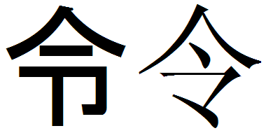
このように、文字コードの体系は様々な経緯で現在の形に至っており、一貫性があるわけでもありません。
1.7. Unicode の応用 (2): 異体字セレクタと外字問題
前節で見た異体字シーケンス (IVS) の仕組みは、実際の社会的課題を解決する手段としても活用されています。その代表例が、日本の行政システムにおける「外字問題」です。本節では、JIS X 0213 でも残された課題と、それに対する文字情報基盤(MJ)から行政事務標準文字(MJ+)に至る取り組みを見ていきます。
残された「外字問題」とその背景
JIS X 0213で第三・第四水準として約3,700字の漢字が追加されましたが、それでも次の問題は解決しませんでした。
-
戸籍漢字の完全収録の難しさ: 日本の戸籍に記載されている漢字は古くからのものも含め非常に多様であり、一部の特殊な字体はJIS X 0213でもカバーされませんでした。
-
字体の厳密な区別の問題: 前節で見た「高」と「髙」のように、一般的には同じ文字として扱われるが微妙に字体の異なる文字について、それぞれ独立したコードポイントを割り当てるのが適切かという問題が残されました。
-
自治体システム間の互換性問題: 各自治体が独自に外字(規格にない文字を独自の番号で追加したもの)を定義していたため、システム間でのデータ交換時に文字化けや情報の欠落が発生していました。
MJ文字情報基盤からMJ+(行政事務標準文字)への発展
これらの課題に対応するため、独立行政法人情報処理推進機構(IPA)が経済産業省の事業として、2010年度から「文字情報基盤整備事業」を始めました。戸籍や住民基本台帳などの行政で用いられる人名漢字等 約6万字(58,862字)を整備するプロジェクトです。ここで整備された文字を MJ文字と呼びます。
事業の中で「IPAmj明朝フォント」と「MJ文字情報一覧表」が開発・公開されました。MJ文字は、Unicodeのコードポイントだけで区別できるものはそのまま、コードポイントでは区別できない字体は IVS(IVDに登録された「Moji_Joho」コレクション)で表します。Unicodeに含まれていなかった文字は国際規格 ISO/IEC 10646 への追加が提案され、2017年に規格化が完了しました。2020年には事業の成果が IPA から一般社団法人 文字情報技術促進協議会へ移管されています(文字情報技術促進協議会：文字情報基盤整備事業)。
その後、2021年に発足したデジタル庁が、地方公共団体の基幹業務システムの統一・標準化に向けて、MJ に戸籍などで実際に使われている約1万字を加えた約7万字の文字セット「行政事務標準文字」(通称MJ+)を定めました。追加分には、まだ Unicode に収録されていない字も含まれます。そうした字は、国際標準化が完了するまでの間、私用面(面15・16)のコードポイントを暫定的に割り当てて使うことになっています(デジタル庁：地方公共団体情報システムにおける文字要件の運用に関する検討会報告書、2024年7月)。
|
「外字問題」とMJ+
名前に珍しい漢字が含まれていると、行政手続きで思わぬ障害に遭遇することがあります。自治体のコンピューターシステムに漢字が登録されておらず、「□」や「〓」といった記号で表示されたり、別の似た字に置き換えられたりする「外字問題」です。これは単なる表示の問題ではなく、システム間でデータをやり取りする際に情報が失われるリスクをかかえています。 MJとMJ+では、字体を次の3つの方法で表します。自治体ごとに独自の番号を付けるのをやめ、共通の番号で字体を区別するためです。
名前は本人にとって大切なものです。正確な漢字表記を保つことは、単なる利便性の問題を超えて、行政サービスを正しく受けることにもつながります。 |
IVS で字体を表すには、次の3つがそろう必要があります。
-
基底文字: たとえば「辻」は、Unicode上では単一のコードポイント(
U+8FBB)ですが、しんにょうの点が1つの字体と2つの字体があります。 -
異体字セレクタ: 基底文字の後ろに異体字セレクタを付けて、特定の字体を指定します。
-
IVD（Ideographic Variation Database）への登録: どの組み合わせがどの字体を表すかは、Unicodeコンソーシアムが管理する IVD に登録されています。
さらに、IVS に対応したソフトウェアとフォントも必要です。IPAmj明朝フォントは MJ文字の約6万字を IVS も含めて収録しています。MJ+ の追加文字についても、デジタル庁がフォントを整備しており、2026年8月には追加文字のフォントが一般にも公開されました(窓の杜、2026年8月19日)。
新しい字を次々に別のコードポイントとして追加するのではなく、既存のコードポイントに異体字セレクタを組み合わせて字体を区別する方法は、互換性を保ちながら多数の字体を扱う現実的な方法の1つです。ただし、送る側と受け取る側の両方が IVS に対応していなければ、意図した字体は表示されません。
1.8. Unicode の応用 (3): 文字の合成と正規化
異体字セレクタは「基底文字 + 異体字セレクタ」という2つのコードポイントの組み合わせで1つの字を表していました。実は Unicode には、これと同じように 複数のコードポイントを組み合わせて1つの字を表す 仕組みが他にもいくつかあります。これが、Unicodeのプログラマー泣かせなところでもあります。この仕組みのために、Unicodeで書かれた文字が何文字なのか数えるのが面倒ですし、同じ字体の文字に結果的に複数の符号化表現が存在することになります。本節では、ラテン文字のアクセント、日本語の濁点・半濁点、そしてハングルといった具体例をもとに、合成と「正規化」の考え方を見ていきます。
「合成済み文字」と「結合文字列」
先行する文字と組合わせて使う文字のことを結合文字といいます。異体字セレクタも、単独の目に見える字形を持たない結合文字に分類されます。
a とアキュートアクセントを結合した文字 á を Unicode で表現するには2通りの方法があります。
合成済みの文字 á のコードポイント U+00E1 を用いる方法と、 a のコードポイント U+0061 と結合用のアキュートアクセント(つまり結合文字)のコードポイント U+0301 を並べて、表示するときに組み合わせる方法の2つです。後者のように複数のコードポイントが連なったものを結合文字列と呼びます。
合成済み文字 |
á |
|
|
結合文字列 |
á |
a + ́ |
|
ハングルなどのより複雑な組合せが可能な文字では、複数のコードポイントを組合せて1つの文字を表現することもできます。
合成済み文字 |
한 |
|
|
結合文字列 |
한 |
ᄒ + ᅡ + ᆫ |
|
濁音と半濁音の合成
日本語の仮名の濁点・半濁点にも、合成済み文字と結合文字列の2通りの表し方があります。結合用の濁点は U+3099、半濁点は U+309A です(単独で使う「゛」U+309B とは別の文字です)。
合成済み文字 |
じ |
|
|
結合文字列 |
じ |
し + ゙ |
|
次にプログラミング言語Pythonを使って上の表の確認をしてみます(# の後ろは説明のために付けたコメントです)。
>>> hex(ord('じ'))
'0x3058' # 「じ」のコードポイントは U+3058
>>> j1 = '\u3058'
>>> j2 = '\u3057' + '\u3099'
>>> j1, j2
('じ', 'じ') # 見た目は同じ
>>> j1 == j2
False # 中身のコードポイント列は違う
>>> len(j1), len(j2)
(1, 2) # 長さも違う多くのプログラミング言語では、結合文字列を1つの文字とは数えず、結合文字も独立した1文字として数えます。
正規化
結合文字列の仕組みは便利ですが、同じ見た目の文字に合成済み文字のコードポイントも存在するため、1つの文字に対して複数の符号表現が存在することになります。そのため、文字列の比較や検索で、見た目は同じなのに一致しないという問題が起こります。
この違いを吸収するには、比較や保存の前に、結合文字列を合成済み文字に変換したり、その逆の変換をしたりして、表現を1つに揃えます。この変換を正規化(normalization)といい、Unicodeは次の形式を定めています(図 21)。
- 正規化形式C (Normalization Form C / NFC): 正準合成(Canonical Composition)
-
いったん分解してから、規定に従って合成できる箇所を合成済み文字にまとめた形式（合成しないと規定された文字もあります）
- 正規化形式D (Normalization Form D / NFD): 正準分解(Canonical Decomposition)
-
分解の規定がある文字を基底文字と結合文字に分解し、結合文字を規定の順序に並べた形式（すべての文字が分解されるわけではありません）
| 表示される文字 | NFC (合成形式) | NFD (分解形式) |
|---|---|---|
が |
|
|
é |
|
|
한 |
|
|
さらに、〈① → 1〉、〈㈱ → (株)〉、〈㋿ → 令和〉、〈半角カナ → 全角カナ〉のように、見た目や意味が近い文字(互換文字)まで同じとみなして揃える正規化形式として NFKC, NFKD があります。NFKC・NFKDの変換は一方向で、元の「①」には戻せません。検索のための前処理には便利ですが、保存するデータそのものを書き換えると情報が失われます。
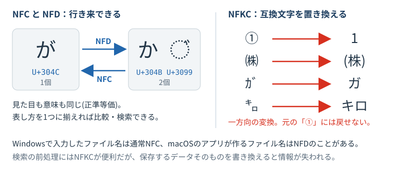
厳密な定義には技術的な細部が多いので立ち入りません。Pythonでは unicodedata.normalize で正規化を試せます。
>>> import unicodedata
>>> j2 = '\u3057\u3099' # し + 結合濁点
>>> unicodedata.normalize('NFC', j2) == 'じ'
True
>>> len(unicodedata.normalize('NFD', 'じ'))
2
>>> unicodedata.normalize('NFKC', '①㈱ｶﾞ')
'1(株)ガ'|
ファイル名の濁点が分かれる問題(macOSとWindows)
濁点や半濁点を含む仮名の2通りの表現は、ファイル名で実際に問題を起こします。Windowsでは、キーボードから入力したファイル名は通常NFC(合成済み文字)になります。一方、かつてのmacOSのファイルシステム(HFS+)は、ファイル名をNFDに類似した形式に変換して保存していました。現在のmacOSのファイルシステムAPFSは、ファイル名を変換せずそのまま保存しますが、互換性のために両形式を同じ名前として扱う仕組みがあり、アプリケーションによっては依然として分解された形式のファイル名が作られることがあります。 Windowsをはじめとする多くの環境では、正規化形式の異なるファイル名は別の名前として扱われます。そのため、macOSからコピーしたファイルの濁点や半濁点が独立した1つの文字として離れて「 macOSでは、たとえば以下のようにしてファイル名をすべて NFC 形式に書き換えることができます( ファイル名ではなくテキストファイルの内容を変換して標準出力に出すには、次のようなコマンドを使います(UTF-8-MACはmacOS由来の分解形式を表す名前で、扱いは実装に依存します)。 |
|
ZIPファイルのファイル名の文字化け
ZIPファイルでも、ファイル名の文字化けが起こることがあります。ZIPの形式では、ファイル名をUTF-8で記録したことを示す印(フラグ)が後から追加されました。印のないZIPのファイル名は、展開するソフトがOSの既定の文字コード(日本語版WindowsならCP932)で解釈するのが一般的です。以前のWindowsの標準機能で作ったZIPのファイル名はCP932で記録されていました(現在のWindowsのエクスプローラーはUTF-8で記録し、印も付けます。Microsoft Japan Windows Technology Support Blog)。一方、macOSで作ったZIPのファイル名はUTF-8(しかも分解形式)で記録され、印が付かないこともあります。そのため、古いWindowsで作ったZIPや印のないZIPをやりとりすると、ファイル名が文字化けすることがあります。 Windowsの設定には、システム全体の既定の文字コード(ANSIコードページ)をUTF-8に切り替える項目(「ベータ: ワールドワイド言語サポートで Unicode UTF-8 を使用」)もあります。ただし、Shift_JISを前提とした古いアプリケーションが正しく動かなくなることがあるため、切り替えには注意が必要です。 |
1.9. Unicode の応用 (4): 絵文字
絵文字は、Unicodeのもっとも目立つ「応用」の1つです。前節で扱った合成の仕組み(複数のコードポイントを組み合わせて1字を作る考え方)を、さらに広げて使っています。
日本の携帯電話からUnicodeへ
絵文字は日本の携帯電話で広まりました。1997年にはJ-フォン(のちのソフトバンク)の携帯電話に90種類の絵文字があり、1999年には、当時NTTドコモで働いていた栗田穣崇氏が、携帯電話向けインターネットサービス「iモード」のために176種類の12×12ピクセルの絵文字を作りました。携帯電話の短いメールで感情を伝えやすくする小さな絵は国内で人気を博し、各社が独自の絵文字を実装しました。ところが、絵文字の番号は会社ごとに異なっていたため、別の会社の携帯電話へ絵文字を含むメールを送ると文字化けが起こりました。
2007年ごろから、Googleの Mark Davis 氏らが、絵文字のUnicode標準化をUnicodeコンソーシアムに働きかけ始めました。2008年7月にはソフトバンクから iPhone 3G が発売され、Apple も日本向けに絵文字機能を実装しています。2009年1月にはGoogleとAppleの技術者(AppleのYasuo Kida氏、Peter Edberg氏ら)が共同で、絵文字をUnicodeに加える正式な提案を提出しました。こうして2010年10月のUnicode 6.0で、日本の携帯電話の絵文字との互換性を目的とした絵文字が収録され、既存の記号と合わせて722文字が最初の標準的な絵文字の集合になりました。英語でもそのまま emoji と呼ばれています。その後も追加が続き、2026年9月の Emoji 18.0 の時点で、肌の色などの組み合わせを含めて3,972種類あります(Unicode: Emoji Counts)。
日本の携帯電話との互換性が出発点だったため、「🏣」(郵便局)や「🏯」(城)、「🎏」(こいのぼり)など日本文化に特有の絵文字も多く含まれています。Unicodeの文字名(英語)と、コード表の注記を見ると、英語話者にとって馴染みのない概念をどのような語彙で表現したかが読み取れます。
-
📛(
U+1F4DB): NAME BADGE(名札) -
🈵(
U+1F235): 「満」の囲み文字(満席・満車) -
🈹(
U+1F239): 「割」の囲み文字(割引) -
🍱(
U+1F371): BENTO BOX(弁当) -
💮(
U+1F4AE): WHITE FLOWER。注記は brilliant homework(「よくできました」の花丸) -
💩(
U+1F4A9): PILE OF POO。注記は dog dirt(犬の糞)で、友好的な顔を描いても描かなくてもよいとされている
絵文字が世界中で急速に普及した理由の一つは、言語の壁を超えて感情や概念を伝えられることでした。オックスフォード辞書が2015年の「今年の言葉」に、単語ではなく絵文字「😂」(うれし泣きの顔)を選んだことは、その広がりを示しています。
国際標準になった絵文字では、人種・性別・身体的特徴をどう表現するかといった、技術的というよりは社会的な論点も継続的に議論されています。新しい絵文字の追加には、Unicodeコンソーシアムによる選考の手続きがあります。
絵文字の組み合わせ
絵文字には、複数のコードポイントを組み合わせて1つの絵文字を表す仕組みがあります(図 22)。
-
肌の色の修飾子：人を表す絵文字の直後に
U+1F3FB〜U+1F3FFの5種類のどれかを置くと、肌の色を指定できます。 -
ゼロ幅接合子(ZWJ, zero width joiner)
U+200D：絵文字と絵文字の間に置くと、対応する環境では1つの絵文字として表示されます。たとえば〈女性 👩〉〈ZWJ〉〈料理 🍳〉で〈料理人 👩🍳〉、〈女性 👩〉〈ZWJ〉〈稲 🌾〉で〈農家 👩🌾〉になります。
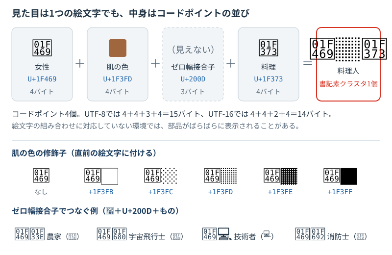
このように Unicode では、見た目の1文字がコードポイントの複雑な組合せで表されることもあるため、単純な規則では文字数を数えることができません。そこで、Unicode では利用者から1文字に見える単位を書記素クラスタ(grapheme cluster)として、コードポイントの並びを書記素クラスタに区切る方法を定めています(UAX #29: Unicode Text Segmentation)。
|
家族の絵文字：見た目が変わってもコードポイント列は区別する
家族の絵文字の表示は、フォントやOSの版によって、人物を描いたものやシルエットなどに変わることがあります。ただし、見た目の変更と、Unicodeのコードポイント列の変更は別です。以下の例はコードポイント列の構造を確認するためのものです。 家族をあらわす絵文字は、要素となる絵文字の大人と子供の性別などの構成を変えることによって様々な組合せで表示できます(対応するフォントが必要です)。ゼロ幅接合子
以下の例ではコードポイントを省略して、合成文字を「＋」で表します:
最後の例は、絵文字4個とゼロ幅接合子3個の、計7個のコードポイントの並びです。見た目は1つの絵文字ですが、UTF-8で符号化すると25バイトもあります(4バイト×4個＋3バイト×3個＝25バイト)。 |
|
同じ絵文字でも環境によって見た目が違う
絵文字に使われているフォントはWindows, macOS, Android等のOSや、使っているアプリケーションやアプリケーション中でのフォントの設定によって異なることがあります。たとえば、寿司「🍣」はどのように見えているでしょうか。私にはトロ2貫に見えていますが、環境によってはカッパ巻きになってしまうこともあり、同じ寿司でも随分と印象が変わってしまいます。念のため、私のコンピューター環境(macOS)で見える寿司の絵文字を画像として貼り付けておきます。
私の環境ではテレビの絵文字はとても昭和風でブラウン管です。 |
|
ハンバーガーの絵文字 🍔
Unicodeの絵文字でハンバーガーの具材の順番が問題になったことがありました。2017年10月、あるユーザーがGoogleとAppleのハンバーガー絵文字を比較する投稿を当時のTwitter(現在のX)にしたことから議論が始まります。 Googleの絵文字では、チーズがパティの下にあり、Appleではチーズがパティの上にあり、レタスの位置も両社の絵文字では異なっていました。チーズがパティの上か下かで論争になり、パティの上にチーズを乗せるのが一般的だという意見が大勢を占めました。この騒動を受けて、GoogleのCEOは「正しい順番について皆が合意できるなら、月曜日にすぐ対応する」と投稿し、Android 8.1でチーズの位置をパティの上に修正しました。 絵文字はUnicodeコンソーシアムが標準を定めていますが、フォントは各社が独自にデザインするため、同じ絵文字でも見た目が異なることがあります。 |
もともとの「字体」という抽象概念に対してコードポイントを割り当てるという当初の考え方からすると、絵文字は随分遠いところまで来ました。絵文字は文字であるにもかかわらず、色や組み合わせの様々な規定があり、正しく表示するためのプログラムの実装にも相当の労力が必要になっています。
1.10. プログラミング言語とUnicode
ほとんどのプログラミング言語では文字列をデータとして扱う仕組みが備わっています。多くの言語でコードポイントによる文字の記述などUnicodeに準拠した文字列の扱いが可能です。ただし、その符号化方式は言語によってまちまちです。
UTF-16の符号単位 |
JavaScript, Java, Scala, C# の長さ・添字の基本単位 |
|---|---|
UTF-8の符号単位（バイト） |
JuliaのString（lengthはコードポイント数） |
バイト列 |
Goのstring。UTF-8以外のバイト列も格納できる。rangeはUTF-8として解釈する |
Unicodeコードポイント |
Pythonのstr。CPythonは文字範囲に応じて格納幅を選ぶ |
たとえばJavaの文字列の添字はUTF-16の符号単位を数えますが、実装が必ず1単位を2バイトのメモリに格納するとは限りません。Perlでも、バイト列とUnicodeの文字列を区別する必要があります。
プログラミング言語Pythonで「㋿、㈱、㌔、Ⅶ、㊾」をNFKCによって正規化してみます。
>>> import unicodedata
>>> unicodedata.normalize('NFKC', '㋿、㈱、㌔、Ⅶ、㊾')
'令和、(株)、キロ、VII、49'プログラミング言語Juliaで「👩❤️💋👨」の文字数とバイト数を確認してみます(Julia は文字列を UTF-8 で符号化しています)。コードポイント U+FE0F は、絵文字で使われる異体字セレクタで、カラフルな絵文字がある場合は、その絵文字を選ぶように指定するものです。
julia> kiss="\U1F469\u200d\u2764\uFE0F\u200D\U1F48B\u200D\U1F468" # コードポイントで絵文字を入力
"👩\u200d❤️\u200d💋\u200d👨" # ばらばら！
julia> print(kiss)
👩❤️💋👨 # 1つの絵文字になった
julia> length(kiss) # 文字数
8
julia> ncodeunits(kiss) # バイト数
27次にプログラミング言語 JavaScript で UTF-16 で符号化したときのバイト数を確認してみます。JavaScript は文字列を UTF-16 で符号化しています。「👩❤️💋👨」は計8つのコードポイント(👩, ZWJ, ❤, VS-16, ZWJ, 💋, ZWJ, 👨)で構成されており、BMP外の3つ(👩, 💋, 👨)はサロゲートペアを用いて4バイトで符号化され、残りの5つ(ZWJ×3, ❤, VS16)はそれぞれ2バイトで符号化されるので、4バイト×3個＋2バイト×5個＝22バイト となります。
> kiss="\u{1F469}\u200d\u2764\uFE0F\u200D\u{1F48B}\u200D\u{1F468}" // コードポイントで絵文字を入力
'👩❤️💋👨'
> kiss.length * 2 // UTF-16で符号化したバイト数（BOMなし）
22JavaScriptの \u{…} はコードポイントを指定する表記です。kiss.length はUTF-16の符号単位の数であり、length * 2 はUTF-16としてのバイト数です。実際の処理系のメモリ使用量を測っているわけではありません。
1.11. Windows と macOS で文字コードの確認
Windows の PowerShell や macOS のターミナルを使ったことがある人は、文字のコンピューター内部での表現を直に確認してみてください。
Windows の PowerShell での確認方法
ABCabc の内部表現をしらべます。Format-Hex は、データを16進法のバイト列で表示するコマンドです(表示の形式はPowerShellの版によって少し異なります。最後の行は説明のために付け加えたものです)。
PS> "ABCabc" | Format-Hex
00 01 02 03 04 05 06 07 08 09 0A 0B 0C 0D 0E 0F
00000000 41 42 43 61 62 63 ABCabc
A B C a b c1行だけ ABCabc と書いて Windows の改行で保存したファイル text.txt の内部表現をしらべます。行末に改行コード CR+LF(0D 0A)が入っていることがわかります。
PS> Format-Hex text.txt
00 01 02 03 04 05 06 07 08 09 0A 0B 0C 0D 0E 0F
00000000 41 42 43 61 62 63 0D 0A ABCabc..
A B C a b c CR LFmacOS のターミナルでの確認方法
macOSに標準で入っている xxd(データを16進法で表示するコマンド)と iconv(文字コードを変換するコマンド)を使います。ターミナルに入力した文字列はUTF-8です。出力の右端は、各バイトをASCIIとして表示した欄です(表示できないバイトは . になります)。下の行の「あ」などは、説明のために付け加えたものです。
文字列 あいうえお の UTF-8 による符号化を確認します(-g 3 は3バイトずつ区切って表示する指定です)。
$ echo "あいうえお" | xxd -g 3
00000000: e38182 e38184 e38186 e38188 e3818a 0a ................
あ い う え お LF次に、UTF-16BE(ビッグエンディアン)に変換して確認します。
$ echo "あいうえお" | iconv -f UTF-8 -t UTF-16BE | xxd -g 2
00000000: 3042 3044 3046 3048 304a 000a 0B0D0F0H0J..
あ い う え お LFUTF-16LE(リトルエンディアン)に変換すると、各2バイトの順序が逆になります。上のUTF-16BEと比較してみてください。16進法の4桁の数字がそのまま上位・下位の順に並ぶビッグエンディアンのほうが、人には読みやすいでしょう。
$ echo "あいうえお" | iconv -f UTF-8 -t UTF-16LE | xxd -g 2
00000000: 4230 4430 4630 4830 4a30 0a00 B0D0F0H0J0..
あ い う え お LF名前をバイト順のない UTF-16 にすると、先頭にBOMが付きます。macOSの iconv ではビッグエンディアンで feff が、Linuxの iconv(GNU)ではリトルエンディアンで fffe が付くことが多く、実装によって異なります。
Shift_JIS に変換して確認します(printf の \r\n で Windows の改行 CR+LF を付けています)。
$ printf "あいうえお\r\n" | iconv -f UTF-8 -t SHIFT_JIS | xxd -g 2
00000000: 82a0 82a2 82a4 82a6 82a8 0d0a ............
あ い う え お CRLFUTF-8の場合は、macOSの od コマンドで、対応する文字を合わせて表示することもできます(** は前の文字の続きのバイトです)。
$ echo "あいうえお" | od -tx1c
0000000 e3 81 82 e3 81 84 e3 81 86 e3 81 88 e3 81 8a 0a
あ ** ** い ** ** う ** ** え ** ** お ** ** \n
0000020文字コードの推定や改行コードの変換までできる nkf という便利なツールもあります(macOSでは別途インストールが必要です)。
|
おすすめの本
文字コードをめぐる標準化には様々な苦労がありました。1980年代からワープロやコンピューターが普及しはじめると、工業規格としての文字の標準化を「文化の破壊」と批判する作家もいました。Unicodeの標準化では、国家間での様々な利害や価値観が衝突するため、文化、文字、技術に対する深い理解と、根気強い交渉力が必要となります。 このような苦労の過程を、実際に標準化に携わった著者が記した次の本をおすすめします。
|
2. 練習問題
問題は、基本の確認、計算・手順の練習、考える問題の順に並んでいます。解答と解説は各問題の直下に折りたたんであるので、自分で考えてから確認してください。
次の記述のうち、正しいものをすべて選べ。
-
ASCIIは128個の文字(制御文字を含む)を定めており、その番号は7ビットで表せる
-
ASCIIは1963年に米国で策定された文字コードである
-
ASCIIにはひらがなが含まれる
-
ASCIIの制御文字は、画面に表示するための文字である
-
JIS X 0201 では、ASCIIの
0x5Cの位置のバックスラッシュを円記号¥に置き換え、8ビットに広げた領域に半角カタカナを加えた
解答
正解: 1, 2, 5
-
1: 番号は0〜127(16進法で
0x00〜0x7F)で、\(2^7 = 128\) 通りなので7ビットで表せます。ファイルに保存するときは、1文字を1バイト(8ビット)に収め、最上位ビットを0にするのが普通です。 -
3: 誤り。ASCIIには英数字、記号、制御文字しか含まれません。
-
4: 誤り。制御文字は改行など、ディスプレイやプリンターの動作をコントロールするための文字です。
-
5: 正しい。このため、日本語のフォントではバックスラッシュが
¥の形で表示されることがあります。
改行コードについての記述として、正しいものをすべて選べ。
-
Unix/Linux と現代の macOS は、LF(
0x0A)1バイトを改行として用いる -
Windows は、CR(
0x0D)と LF(0x0A)の2バイトを改行として用いる -
CR の文字コードは
0x0Aである -
LFだけで改行したテキストファイルを、LFに対応していない古いWindowsのアプリで開くと、改行が認識されない場合がある
解答
正解: 1, 2, 4
3 は誤りです。CR (Carriage Return) は 0x0D、LF (Line Feed) が 0x0A です。CRは「行頭に戻る」、LFは「1行下へ送る」動作に由来します(図 3)。改行の表し方はOSの慣習であり、アプリや設定によっても変わります。
「符号化文字集合(CCS)」と「文字符号化方式(CES)」の関係について、正しい記述を選べ。
-
符号化文字集合は、コンピューター内部での実際のバイト表現を定める
-
文字符号化方式は、各文字に対する番号(コードポイント)を定める
-
同じ符号化文字集合(例: Unicode)に対して、複数の文字符号化方式(例: UTF-8, UTF-16, UTF-32)が存在しうる
-
ASCIIや JIS X 0201 が作られた当時から、符号化文字集合と文字符号化方式の概念は明確に分離されていた
解答
正解: 3
1 と 2 は説明が逆です。符号化文字集合が番号を決め、文字符号化方式がその番号をバイト列にする規則を決めます。たとえば「あ」は Unicode の番号 U+3042 で、UTF-8 では E3 81 82、UTF-16BE では 30 42 です。4 は誤りで、ASCIIや JIS X 0201 が作られた当時は、両者の概念は未分化でした。
ISO-2022-JP、Shift_JIS、EUC-JP について、正しい記述をすべて選べ。
-
ISO-2022-JP はモード切替によって複数の文字集合を扱い、各バイトの最上位ビットを使わないため、7ビットしか通せない通信路でも送れる
-
Shift_JIS は半角カタカナを1バイトで、JIS X 0208 の文字を2バイトで符号化する
-
EUC-JP は半角カタカナを1バイトで、JIS X 0208 の文字を2バイトで符号化する
-
EUC-JP では日本語に関わるすべてのバイトの最上位ビットが1なので、ASCIIのバイトと重ならない
-
Shift_JIS では2バイト文字の2バイト目に
0x5C(ASCIIの\と同じ値)が現れることがある
解答
正解: 1, 2, 4, 5
3 は誤りです。EUC-JP では半角カタカナを 2バイト(先頭の 0x8E + コード)で符号化します。1バイトで符号化するのは Shift_JIS のほうです。EUC-JP は、日本語に関わるバイトの最上位ビットをすべて1にする設計を貫いたために、半角カタカナのバイト数が増えるという代償を払っています。5 の例は「表」(95 5C)です(図 10)。
文字符号化方式の「自己同期性」について、正しい記述をすべて選べ。
-
自己同期性とは、バイト列の途中から読み始めても文字の境界を判定できる性質である
-
UTF-8 と EUC-JP はいずれも完全な自己同期性をもつ
-
Shift_JIS は自己同期性をもち、2バイト目をASCIIの文字と取り違える危険がない
-
自己同期性は、文字列の検索やセキュリティの観点から重要である
解答
正解: 1, 4
2 は誤りです。完全な自己同期性をもつのはUTF-8で、続きのバイトは必ず 10 で始まるので、途中からでも次の文字の先頭を見つけられます。EUC-JPはASCIIのバイトと日本語のバイトが重ならないというだけで、日本語の2バイト文字どうしの境界は途中からは判定できません(1バイト目も2バイト目も 0xA1〜0xFE なので、どちらかわからない)。
3 も誤りです。Shift_JIS は2バイト文字の2バイト目がASCIIの範囲(たとえば 0x5C = \)と重なることがあり、自己同期性をもちません。そのため、単純な検索で \ を誤検出したり、符号化の解釈の食い違いから引用符などの区切りが変わってしまうセキュリティ問題が起きたりしました。
ASCIIでは A が 0x41、a が 0x61 である。
-
Gは0x47である。gの16進法の値を答えよ。 -
Aとaの2進表現を比べ、値が異なるビットはどのビットか。「値いくつを表すビットか」で答えよ。 -
2 のビットを反転する操作を
[(0x5B)に行うと、どの文字になるか。
解答
-
0x67。大文字と小文字の番号の差はいつも0x20(10進法で32)なので、\(47_{(16)} + 20_{(16)} = 67_{(16)}\) です。 -
A=0b1000001、a=0b1100001なので、異なるのは値32(0x20)を表すビットです。右端を1桁目として右から6桁目、最下位ビットを0番目と数えると5番目です。「何ビット目」という言い方は数え方によって1ずれるので、値で示すと誤解がありません。 -
0x5B=0b1011011のこのビットを反転すると0b1111011=0x7Bで、{になります。大文字・小文字の変換に使えるのは英字 A〜Z / a〜z だけで、それ以外の文字では別の文字に変わってしまいます。
ASCIIで記録した英数字だけの文字列 ABC123 と同じバイト列になる文字符号化方式を、すべて選べ(BOMは付けない)。
-
ISO-2022-JP
-
Shift_JIS
-
EUC-JP
-
UTF-8
-
UTF-16
解答
正解: 1, 2, 3, 4
この文字列は、1〜4のどれでも英数字1字につき1バイトで、41 42 43 31 32 33(16進法)になります。ISO-2022-JPはASCIIのモードから始まるので、日本語を含まなければ切替コードは入りません。5のUTF-16では1字につき2バイトが必要で、UTF-16BEなら 00 41 00 42 … のようになります。
ただし、英数字以外では違いが出ることがあります。たとえば Shift_JIS の 0x5C は日本語環境では円記号として扱われることがあり、日本語を含む文字列ではISO-2022-JPに切替コードが入ります。
3文字の文字列「Aあ🍣」(U+0041、U+3042、U+1F363)を、BOMなしの UTF-8、UTF-16、UTF-32 で符号化したときのバイト数をそれぞれ答えよ。また、次の記述のうち正しいものを選べ。
-
UTF-8は、Unicodeのすべてのコードポイントを1バイトで表現できる
-
UTF-16は、Unicodeのすべてのコードポイントを2バイトで表現できる
-
UTF-32は、Unicodeのすべてのスカラー値を4バイトで表現できる
解答
UTF-8: 1 + 3 + 4 = 8バイト、UTF-16: 2 + 2 + 4 = 8バイト、UTF-32: 4 × 3 = 12バイト。
-
UTF-8:
U+0041はASCIIの範囲なので1バイト、U+3042はU+0800〜U+FFFFの範囲なので3バイト、U+1F363はBMP外なので4バイトです。 -
UTF-16: BMP内の2文字は2バイトずつ、BMP外の🍣はサロゲートペア(
D83C DF63)で4バイトです。 -
UTF-32: どの文字も4バイトです。
この例のように、UTF-8とUTF-16のどちらが短くなるかは文字の種類によります。英数字が多ければUTF-8が短く、BMP内の漢字・かなばかりならUTF-16が短くなります。
記述の正解は 3 だけです。1 と 2 は誤りで、UTF-8は1〜4バイト、UTF-16は2バイトまたは4バイトの可変長です。
UTF-8のビット配置の表(「発展：UTF-8のビット配置」)を使って、次の文字のUTF-8のバイト列を16進法で求めよ。
-
「é」(
U+00E9) -
「学」(
U+5B66)
解答
-
C3 A9 -
E5 AD A6
1: U+00E9 は U+0080〜U+07FF の範囲なので2バイトの型 110xxxxx 10xxxxxx を使います。0xE9 を11ビットで表すと 000 1110 1001 です。上位5ビット 00011 を1バイト目に、下位6ビット 101001 を2バイト目に入れると、11000011 10101001 = C3 A9 です。
2: U+5B66 は U+0800〜U+FFFF の範囲なので3バイトの型 1110xxxx 10xxxxxx 10xxxxxx を使います。0x5B66 = 0101 1011 0110 0110 を、上位4ビット 0101、中位6ビット 101101、下位6ビット 100110 に分けて入れると、11100101 10101101 10100110 = E5 AD A6 です。
よくある間違いは、コードポイントの16進数をそのまま並べて 5B 66 とすることです。それはUTF-16BEのバイト列で、UTF-8ではありません。
-
文字列「あA」(
U+3042、U+0041)を、BOM付きの UTF-16 で符号化したバイト列を、ビッグエンディアンとリトルエンディアンの場合についてそれぞれ16進法で書け。 -
BOM(Byte Order Mark)について、正しい記述をすべて選べ。
-
UTF-16 の BOM
FE FFはビッグエンディアンを示す -
UTF-16 の BOM
FF FEはリトルエンディアンを示す -
UTF-8 の BOM (シグネチャ) は
EF BB BFで、UTF-8のエンディアンを示すために必要である -
BOM の正体はコードポイント
U+FEFF(ZERO WIDTH NO-BREAK SPACE)である
-
解答
-
ビッグエンディアン:
FE FF 30 42 00 41、リトルエンディアン:FF FE 42 30 41 00。BOM(U+FEFF)も、文字と同じ規則で2バイトに分けて並べます。ASCIIのAも UTF-16 では00 41の2バイトになることに注意しましょう。 -
正解: a, b, d。c は誤りです。UTF-8 は規格がバイトの並びそのものを定めていて、先頭から1バイトずつ読むので、エンディアンの問題がそもそも生じません(図 14)。
EF BB BFは、ファイルがUTF-8であることを示す目印(シグネチャ)として使われることがあるだけで、エンディアンを示すものではありません。
Unicode における「包摂」と「異体字シーケンス(IVS)」について、正しい記述をすべて選べ。
-
包摂とは、字形の異なる複数の字体を1つの文字としてまとめ、同じコードポイントを与えることである
-
異体字セレクタ(
U+E0100〜U+E01EF)を基底文字の後ろに付加することで、1つの基底文字について最大240通りの字体を区別できる -
異体字セレクタを使えば、表示されるグリフはフォントによらず常に同じになる
-
「高」と「髙」のように、同じ字とみなせるが異なるコードポイントを持つ字もUnicodeに存在する
-
異体字セレクタを1つ付けると、UTF-8でもUTF-16でも4バイト増える
解答
正解: 1, 2, 4, 5
3 は誤りです。登録されたIVSは字体を指定しますが、明朝体・ゴシック体などのデザインまで同一にはしません。対応する字形がないフォントや、IVSに対応していないソフトウェアでは、指定が反映されない場合もあります。5 は、異体字セレクタ U+E0100 以降がBMP外にあり、UTF-8でもUTF-16でも4バイトになるからです。
「が」をUnicodeで表現する2つの方法と正規化について、正しい記述をすべて選べ。
-
合成済み文字
U+304Cは1コードポイント、結合文字列U+304B U+3099は2コードポイントである -
多くのプログラミング言語で文字列の長さを取ると、結合文字列のほうが大きくなる
-
NFC による正規化では、結合文字列が合成済み文字に変換される
-
NFD による正規化では、合成済み文字が結合文字列に変換される
-
NFKC で「①」を「1」に正規化したあと、NFC を適用すると「①」に戻る
解答
正解: 1, 2, 3, 4
NFC は合成済み文字にまとめる方向、NFD は結合文字列に分解する方向の正規化で、互いに行き来できます(図 21)。同じ字に対して複数の符号表現が存在すると、比較や検索で一致しないため、どちらかの形に揃えて扱います。
5 は誤りです。NFKC・NFKD は互換文字をふつうの文字に置き換える一方向の変換で、元の「①」の情報は失われます。
家族の絵文字 👨👩👧👦 は、👨 U+1F468、👩 U+1F469、👧 U+1F467、👦 U+1F466 の4つの絵文字の間に、ゼロ幅接合子(ZWJ、U+200D)を1つずつはさんだものである。
-
コードポイントはいくつか。
-
UTF-8 で符号化すると何バイトか。
-
UTF-16 で符号化すると何バイトか。また、JavaScript の
length(UTF-16の符号単位の数)はいくつになるか。 -
利用者から1文字に見えるこの単位を何と呼ぶか。
解答
-
7個(絵文字4個 + ZWJ 3個)。
-
25バイト。4つの絵文字はBMP外なので4バイトずつ、ZWJ(
U+200D)はBMP内のU+0800〜U+FFFFの範囲なので3バイトずつで、4 × 4 + 3 × 3 = 25 です。 -
22バイト。絵文字はサロゲートペアで4バイトずつ、ZWJは2バイトずつなので 4 × 4 + 2 × 3 = 22 です。符号単位(2バイト)の数は 22 ÷ 2 = 11 なので、
lengthは11になります。 -
書記素クラスタ(grapheme cluster)。見た目は1文字でも、コードポイント数は7、UTF-8のバイト数は25、UTF-16の符号単位数は11と、数える単位によって「長さ」が変わります。
UTF-8で保存したテキストファイルを、あるアプリがShift_JISだと思い込んで開いたところ、「こんにちは」は「縺薙ｓ縺ｫ縺｡縺ｯ」と表示され、「データ」は一部が「�」になって表示された。
-
なぜ「こんにちは」は別の漢字や半角カナの列になったのか。バイトの区切り方に注目して説明せよ。
-
このファイルを、上書き保存せずにUTF-8として開き直せば、正しく表示されるか。
-
文字化けした状態のまま、アプリが表示している文字を上書き保存してしまった。「こんにちは」と「データ」のそれぞれについて、元に戻せる可能性を説明せよ。
解答
-
UTF-8では「こんにちは」の各文字が3バイトずつ、計15バイトです。Shift_JISとして読むと、このバイト列が2バイトの文字(漢字や全角の英字)と1バイトの半角カナに区切り直されます。たとえば先頭の
E3 81は「縺」、次の93 E3は「薙」になり、最初の文字からずれたまま無関係な文字になります(図 18)。 -
正しく表示されます。ファイルのバイト列そのものは変わっていないので、正しい符号化方式で読み直せば元に戻ります。
-
「こんにちは」のバイト列は、Shift_JISとしてすべて正しい文字に区切れたので、化けた文字列を Shift_JIS のバイト列に戻してから UTF-8 として読み直せば、元に戻せる可能性があります。一方「データ」は、Shift_JISとして正しくない部分が「�」(
U+FFFD)に置き換えられています。「�」からは元のバイトがわからないので、その部分は符号化方式を変えるだけでは戻せません。文字化けに気づいたら、上書き保存する前に、正しい符号化方式で開き直すことが大切です。